ВЕДОМСТВЕННЫЕ СТРОИТЕЛЬНЫЕ НОРМЫ
|
МИНИСТЕРСТВО ТРАНСПОРТНОГО СТРОИТЕЛЬСТВА СССР МИНИСТЕРСТВО РЫБНОГО ХОЗЯЙСТВА СССР |
МИНИСТЕРСТВО МОРСКОГО ФЛОТА СССР РОССИЙСКИЙ ГОСУДАРСТВЕННЫЙ КОНЦЕРН РЕЧНОГО ФЛОТА «РОСРЕЧФЛОТ» |
ПРАВИЛА
ПРОИЗВОДСТВА И ПРИЕМКИ РАБОТ
НА СТРОИТЕЛЬСТВЕ НОВЫХ,
РЕКОНСТРУКЦИИ И РАСШИРЕНИИ
ДЕЙСТВУЮЩИХ ГИДРОТЕХНИЧЕСКИХ
МОРСКИХ И РЕЧНЫХ
ТРАНСПОРТНЫХ СООРУЖЕНИЙ
ВСН 34-91
Минтрансстрой СССР
Часть III
МОСКВА 1992
Справочное
ГОСТ 12.1.004-85 ССБТ. Пожарная безопасность. Общие требования.
ГОСТ 12.1.010-76 ССБТ. Взрывобезопасность. Общие требования.
ГОСТ 12.2.035-78. Водолазное снаряжение и средства обеспечения водолазных спусков и работ.
ГОСТ 12.3.012-77. Работы водолазные. Общие требования безопасности.
ГОСТ 380-88. Сталь углеродистая обыкновенного качества.
ГОСТ 4781-85. Сталь прокатная для шпунтовых свай.
ГОСТ 26633-85. Бетон тяжелый. Технические условия.
ГОСТ 5180-84. Грунты. Метод лабораторного определения физических характеристик.
ГОСТ 5382-73. Цементы. Методы химического анализа.
ГОСТ 5686-78*. Сваи. Методы полевых испытаний.
ГОСТ 5781-82. Сталь горячекатаная для армирования железобетонных конструкций.
ГОСТ 8267-82. Щебень из природного камня для строительных работ.
ГОСТ 8268-82. Гравий для строительных работ. Технические условия.
ГОСТ 8269-87. Щебень из естественного камня, гравий и щебень из гравия для строительных работ. Методы испытаний.
ГОСТ 8478-81. Сетки сварные для железобетонных конструкций.
ГОСТ 8736-85. Песок для строительных работ. Технические условия.
ГОСТ 10060-87. Бетоны. Методы определения морозостойкости.
ГОСТ 10178-85. Портландцемент и шлакопортландцемент. Технические условия.
ГОСТ 10268-80. Бетон тяжелый. Технические требования к заполнителям.
ГОСТ 10922-75. Арматурные изделия и закладные детали сварные для железобетонных конструкций.
ГОСТ 12071-84. Грунты. Отбор, упаковка, транспортирование и хранение образцов.
ГОСТ 12536-79. Грунты. Методы лабораторного определения зернового (гранулометрического) состава.
ГОСТ 13010-83. Изделия железобетонные и бетонные. Общие требования.
ГОСТ 14098-85. Соединения сварные арматуры и закладных изделий железобетонных конструкций. Типы, конструкция и размеры.
ГОСТ 19804.0-78*. Сваи забивные железобетонные. Общие технические требования.
ГОСТ 19804.5-83. Сваи полые круглого сечения и сваи-оболочки железобетонные цельные с ненапрягаемой арматурой. Конструкция и размеры.
ГОСТ 20425-75. Тетраподы для берегозащитных и оградительных сооружений.
ГОСТ 22733-77. Грунты. Метод лабораторного определения максимальной плотности.
ГОСТ 25100-82. Грунты. Классификация.
СНиП IV-3-83.
СНиП IV-7-84.
Водный кодекс РСФСР. М., Юридическая литература, 1972.
Руководство о порядке согласования органами по регулированию, использованию и охране вод, производства различных видов работ, осуществляемых на водных объектах и в прибрежных зонах. Минводхоз-СССР № 13-1-20/991 от 18.12.78.
Инструкция о порядке выдачи разрешений на производство работ, в пределах береговых охранных полос морей, во внутренних морских и территориальных водах СССР и на континентальном шельфе СССР, кроме Каспийского моря, утвержденная 4/10 мая 1978 г.
Инструкция о порядке выдачи разрешений на производство работ на акватории и в пределах береговой охранной полосы Каспийского моря, утвержденная 4/10 мая 1978 г.
Правила выдачи разрешений на сброс с целью захоронения в море отходов и других материалов, регистрации их характеристик и количества, определения места, времени и методов сброса, утвержденные Государственным комитетом СССР по гидрометеорологии и контролю природной среды 26.01.83.
Международная конвенция по предотвращению загрязнения моря сбросами отходов и других материалов опубликована документом ООН: A/AC 138/S СШ/L 29 от 9 марта 1973 г.
Международная конвенция по предотвращению загрязнения с судов. Л., Транспорт, 1973.
Правила предупреждения столкновения судов в море. МПСС-72.
Правила плавания по внутренним водным путям РСФСР. М., Транспорт, 1984.
Инструкция о мерах предосторожности при производстве дноуглубительных работ в условиях предлагаемой засоренности грунта взрывоопасными предметами, утвержденная ММФ 20.09.67 г.
Технология промерных работ при производстве морских дноуглубительных работ. РД 31.74.04-79.
Техническая инструкция по производству морских дноуглубительных работ. РД 31.74.08-85.
Инструкция по землечерпательным работам. Утверждена МРФ РСФСР 11.05-89.
Техническая инструкция по производству изыскательских работ изыскательскими русловыми партиями Главводпути, утверждена 12.09-80 г.
Сборник руководящих документов по безопасности мореплавания на судах Главморречстроя 1989 г.
Санитарные правила и нормы охраны прибрежных вод морей от загрязнения в местах водопользования населения. СанПиН № 4631-88. Руководство по организации наблюдений, проведению работ и выдаче разрешений на сброс отходов в море с целью захоронения. Утверждено Госкомгидрометом 5.05.83.
Правила отведения с судов в водные объекты отработанных сточных и нефтесодержащих вод. Утверждены Министерством мелиорации и водного хозяйства 31.10.86, Минздравом 16.04.86, Минрыбхозом 15.10.86 и Минречфлотом РСФСР 26.11.86.
Наставление по предотвращению загрязнения водных объектов с судов внутреннего плавания. Введены в действие с 1.01.88. Л., Транспорт, 1987.
Правила техники безопасности и производственной санитарии при производстве морских дноуглубительных работ, выполняемых техническим флотом. ЦНИИС Минтрансстроя. Утверждены 5.05.88.
Правила технической эксплуатации портовых сооружений и акваторий РД 31.35.10-86, М., 1987.
|
Минморфлот |
Применение природного камня в морском гидротехническом строительстве. |
|
ВСН 6/118-74. |
Указания по обеспечению долговечности бетонных и железобетонных конструкций морских гидротехнических сооружений. |
|
ВСН 34-60-78 Минтрансстрой |
Технические указания по производству и приемке работ при возведении морских и речных портовых сооружений (20 глав-выпусков). |
|
Минтрансстрой |
Инструкция по устройству верхнего строения железнодорожного пути. |
|
Минтрансстрой |
Инструкция по строительству цементобетонных покрытий автомобильных дорог. |
|
ВСН 30-83 Минэнерго СССР |
Инструкция по проектированию гидротехнических сооружений в районах распространения вечномерзлых грунтов. |
Правила техники безопасности и производственной санитарии при производстве строительно-монтажных работ по постройке портовых гидротехнических сооружений. М., Минтрансстрой, 1986.
Единые правила безопасности труда на водолазных работах. Минморфлот. М. ЦРИА. Морфлот. 1980 г. «Положение о геодезической службе строительно-монтажных организаций Минтрансстроя СССР», утвержденное 10.05.84.
Рекомендации по проектированию и строительству волногасящих прикрытий (берм) из фасонных массивов. ЦНИИС Минтрансстроя 1979 г.
ОСТ 35-05-84. Берегоукрепительные работы. Требования безопасности. Минтрансстроя.
ОСТ 35-06-84. ССБТ. Вибропогружение свай. Требования безопасности.
ОСТ 35-18-83. ССБТ. Производство земляных работ способом гидромеханизации. Требования безопасности и производственной санитарии.
ТУ 14-2-879-89. Прокат стальной горячекатаный шпунтовых свай типа Ларсен.
ТУ 35-1007-84. Балки сборные железобетонные бортовые типов: ББ-1, ББ-2, ББ-3.
ТУ 35-1008-84. Плиты сборные железобетонные П-1, П-2.
ТУ 35-1009-84. Сваи железобетонные преднапряженные сечением 45´45 см для свайных фундаментов причалов и других гидротехнических сооружений.
ТУ 35-1010-84. Плиты железобетонные надстроек.
ТУ 35-1011-85. Сваи анкерные АСШ и анкерные плиты АПШ.
ТУ 35-1012-85. Шпунт железобетонный преднапряженный.
ТУ 35-1013-84. Панели двухребристые для портовых набережных-эстакад на оболочках диаметром 160 см и двухребристые панели для набережных уголковой конструкции с внутренней анкеровкой.
ТУ 35-1014-84. Фундаментные плиты.
ТУ 35-1015-84. Ригели.
ТУ 35-1127-82. Сборная железобетонная оболочка большого диаметра с вертикальным членением.
ТУ 35-1128-82. Сборная железобетонная оболочка большого диаметра с горизонтальным членением на кольца.
ТУ 35-1217-84. Плиты сборные железобетонные подпорных стенок, для укрепления береговых откосов.
ТУ 35-1270-85. Массивы бетонные унифицированных конструкций морских берегозащитных сооружений.
ТУ 35-1299-84. Плиты для гидротехнического строительства - лицевые причалов, берменные крепления дна, покрытия территорий, перекрытия каналов.
ТУ 35-1387-85. Массивы железобетонные морских берегозащитных сооружений (для Кавказского побережья).
ТУ 35-1389-85. Элементы железобетонных набережных уголкового профиля.
ТУ 35-1391-85. Плиты сборные железобетонные для покрытий территорий портов и судоремонтных предприятий.
ТУ 35-1407-86. Массивы бетонные для морских и речных гидротехнических сооружений.
TУ 35-1418-86. Наголовник для пакетного погружения шпунта.
ТУ 35-1437-87. Сваи анкерные.
ТУ 35-1438-87. Сваи-оболочки центрифугированные, преднапряженные d = 160 см.
ТУ 35-1491-87. Шпунт тавровый железобетонный.
ТУ 218 УССР 56-87. Гирлянды железобетонные гибкие сборные Г-1. Министерство строительства и эксплуатации автомобильных дорог УССР, Минтрансстрой.
ТУ 35-1772-86. Профиль шпунтовый сварной зетовый.
ЕНиР, сб. 39. Подводно-технические работы. Л., Судостроение, 1986.
ЕНиР, сб. 2, вып. 2, 1986.
РД-31.31.23-81. Руководство по проектированию узких засыпных пирсов и палов с учетом арктических условий.
РД-31.31.25-85. Инструкция по проектированию причальных сооружений для условий Арктики.
Руководство по организации строительного производства в условиях северной зоны. ЦНИИОМТП, М., Стройиздат, 1978.
Справочное
|
Шифр документа |
Наименование документа |
|
01.001 |
Общий журнал работ. |
|
01.002 |
Акт передачи пунктов геодезической основы до начала строительства |
|
01.003 |
Акт передачи пунктов геодезической основы при сдаче в эксплуатацию |
|
01.004 |
Акт освидетельствования свай и шпунта до их погружения |
|
01.005 |
Журнал погружения свай |
|
01.006 |
Сводная ведомость погружения свай |
|
01.007 |
Журнал погружения шпунта |
|
01.006 |
Журнал погружения свай-оболочек |
|
01.009 |
Сводная ведомость погружения свай-оболочек |
|
01.010 |
Акт испытания свай динамической нагрузкой |
|
01.011 |
Журнал бетонных работ |
|
01.012 |
Карта подбора состава бетона и режима тепловлажностной обработки |
|
01.013 |
Акт об изготовлении контрольных образцов бетона |
|
01.015 |
Акт освидетельствования и приемки котлована |
|
01.016 |
Акт на освидетельствование выполненных работ по устройству фундаментов |
|
01.017 |
Акт освидетельствования и приемки выполненных из монолитного железобетона (бетона) конструкций |
|
01.018 |
Акт освидетельствования и приемки смонтированных сборных бетонных, железобетонных и стальных конструкций |
|
01.020 |
Акт освидетельствования и приемки установленной опалубки и установленной арматуры монолитной конструкции |
|
01.021 |
Акт освидетельствования и приемки свайного основания (шпунтового ряда) |
|
01.022 |
Ведомость допущенных при строительстве отступлений от утвержденных проектов и смет |
|
01.025 |
Акт испытания песка |
|
01.026 |
Акт испытания щебня (гравия) |
|
01.027 |
Акт испытания бетонных образцов на водонепроницаемость |
|
01.028 |
Технический паспорт на железобетонное изделие |
|
01.031 |
Журнал изготовления и освидетельствования арматурных каркасов для бетонирования монолитных и сборных железобетонных конструкций |
|
01.032 |
Журнал бетонирования изделий |
|
01.033 |
Журнал регистрации результатов контроля за добавками для бетона |
|
01.034 |
Журнал регистрации результатов испытания бетона на морозостойкость |
|
01.035 |
Журнал регистрации температуры в пропарочных камерах |
|
01.036 |
Журнал регистрации результатов испытаний контрольных бетонных образцов |
|
01.037 |
Журнал регистрации результатов испытаний арматурной стали |
|
01.038 |
Акт испытания цемента |
|
01.039 |
Журнал контроля качества глинистого раствора |
|
01.040 |
Карточка испытаний растворной смеси для инъецирования каналов и заполнения швов |
|
01.041 |
Контрольная карта результатов механических испытаний сварных соединений элементов арматуры и закладных деталей |
|
01.048 |
Паспорт на железобетонный предварительно-напряженный шпунт |
|
01.050 |
Ведомость контрольных измерений и испытаний, произведенных при осмотре готовности к приемке |
|
09.401 |
Журнал наблюдений за деформациями сооружений в период их возведения |
|
09.402 |
Акт технического контроля дноуглубительных работ |
|
09.403 |
Акт приемки дноуглубительных работ |
|
09.404 |
Акт контрольного замера работ, выполненных на объекте |
|
09.405 |
Ведомость подсчета объема грунта на объекте |
|
09.406 |
Журнал виброуплотнения подводных каменных постелей |
|
09.407 |
Журнал изготовления массивов |
|
09.408 |
Журнал операций с массивами |
|
09.409 |
Паспорт на звено оболочки |
|
09.410 |
Акт водолазного обследования сооружения |
|
09.411 |
Акт приемки антикоррозионных работ |
1 Из «Перечня форм исполнительной документации». М., МТС, 1986.
Справочное
Подводный нивелир ЦНИИС ПН-2/30
|
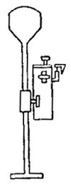 |
Техническая характеристика Рабочая глубина измерений, м............................... До 30 с приставкой........................................................ До 100 Чувствительность индикатора, мм......................... До ±1 Точность измерений, мм.......................................... ±2 Масса нивелира, кг: на воздухе............................................................. До 10 в воде.................................................................... До 1 Габаритные размеры в транспортном положении, м: длина..................................................................... 0,8 ширина.................................................................. 0,3 высота................................................................... 0,3 в рабочем положении: высота................................................................... 2,0 ширина.................................................................. 0,3´0,3 |
Универсальный уклономер ЦНИИС
|
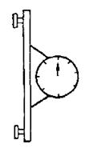 |
Техническая характеристика Рабочая глубина измерений, м.................... Не ограничена Точность измерений, град....................................... ±0,2 Диапазон измерений по шкале, град...................... ±360 Температурная поправка............................... Не требуется Измерительная база, мм........................................... 600 Масса уклономера, кг: на воздухе............................................................. 1,5 в воде.................................................................... 1,0 Габаритные размеры, мм................................. 650´300´80 |
Справочное
|
Транспортируемый грунт |
Наименьший уклон |
|
Глинистый |
0,015-0,045 |
|
Мелкозернистый |
0,025-0,045 |
|
Среднезернистый |
0,030-0,050 |
|
Крупнозернистый |
0,040-0,060 |
|
Гравий |
0,05-0,070 |
Справочное
|
Отклонения |
Величина отклонений |
|
|
Сваи призматические и круглые полые |
Сваи-оболочки |
|
|
По длине элементов (звеньев), мм: |
||
|
а) при длине до 10 м |
±40 |
±40 |
|
б) при длине больше 10 м |
±50 |
±50 |
|
По размерам сторон или наружного диаметра поперечного сечения, мм |
±5 |
+ 7 - 3 |
|
По длине острия, мм |
±30 |
- |
|
По смещению острия от центра, мм |
15 |
- |
|
По наклону плоскости верхнего торца, %: |
||
|
а) для цельных свай |
1,5 |
- |
|
б) для составных свай и свай-оболочек в зоне стыка и цельных свай-оболочек |
1 |
1 |
|
По толщине стенки, мм |
±5 |
+ 7 - 5 |
|
По кривизне (стрелке вогнутости или выпуклости) |
- |
- |
|
При длине элементов, мм: |
||
|
от 3 до 8 м |
8 |
8 |
|
от 9 до 16 м |
13 |
13 |
|
больше 16 м |
20 |
20 |
|
По толщине защитного слоя, мм |
±5 |
±5 |
|
По шагу сеток, спирали или хомутов, мм |
±10 |
±10 |
|
По расстоянию между продольными стержнями арматуры, проволоками или прядями, мм |
±5 |
±10 |
|
По расстоянию от центра подъемных петель или меток для строповки до конца свайного элемента, мм |
±50 |
±50 |
|
По смещению положения подъемных петель относительно продольной оси свайного элемента, мм |
20 |
- |
Справочное
Необходимая суммарная площадь проходного отверстия подмывных труб определяется исходя из требуемого расхода и напора воды, ориентировочные значения которых приведены в табл. 1 из расчета на 1000 см2 лобовой поверхности погружаемого свайного элемента в зависимости от грунтовых условий и глубины погружения. При этом принято, что подмывные трубы снабжаются коническим наконечником, имеющим угол конусности 10° и отношение диаметров выходного и входного отверстий равным 0,45. Техническая характеристика наконечников приведена в табл. 2.
Суммарная площадь проходного отверстия подмывных труб определяется по формуле:
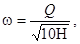
где
w - суммарная площадь проходного отверстая подмывных
труб, см2; Q - расход воды, м3/ч; 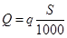
Руководствуясь найденным значением w, указаниями п. 6.82, а также значениями диаметра и площадей проходного отверстия стандартных труб, приведенных в гр. 2 и 3 табл. 2 данного приложения, подбираются необходимый диаметр и количество подмывных труб.
Пример.
Железобетонная свая-оболочка диаметром D - 1,6 м и с толщиной стенки t = 15 см погружается на глубину 30 м в крупнозернистый песок средней плотности. Определить напор воды, диаметр и количество подмывных труб.
1. Определяем по табл. 1 необходимый напор воды при погружении свайного элемента в крупнозернистый песок средней плотности на глубину 30 м
Н @ 1,8 МПа.
2. Определяем площадь лобовой поверхности сваи-оболочки
S = p (D - t) t = 3,14 (160 - 15) 15 = 6850 см2.
3. Определяем необходимый расход воды
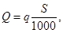
где q @ 80 м3/ч (по табл. 1)
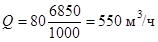
Таблица 1
Напор Н и расход воды q на 1000 см2 лобовой поверхности свайного элемента в зависимости от вида грунта и глубины погружения
|
Глубина погружения в грунт, м |
||||||
|
5-15 |
15-25 |
25-35 |
||||
|
Необходимый избыточный напор у наконечников Н, МПа |
Расход воды на 1000 см2 лобовой поверхности свайного элемента q, м3/ч |
Необходимый избыточный напор у наконечников Н, МПа |
Расход воды на 1000 см2 лобовой поверхности свайного элемента q, м3/ч |
Необходимый избыточный напор у наконечников Н, МПа |
Расход воды на 1000 см2 лобовой поверхности свайного элемента q, м3/ч |
|
|
Насыпной рыхлый неслежавшийся грунт |
0,4-0,6 |
20-25 |
0,6-0,8 |
25-30 |
0,8-1,0 |
30-35 |
|
Песчаные пылеватые грунты средней плотности |
0,4-0,6 |
25-35 |
0,6-0,8 |
30-40 |
0,8-1,0 |
35-45 |
|
Песчаные мелкозернистые грунты средней плотности |
0,6-0,8 |
35-45 |
0,8-1,2 |
45-55 |
1,2-1,5 |
55-65 |
|
Песчаные грунты средней плотности и крупности |
0,8-1,0 |
40-50 |
1,0-1,4 |
50-60 |
1,4-1,6 |
60-70 |
|
Глинистые грунты мягкопластичные |
0,8-1,0 |
45-55 |
1,0-1,4 |
55-65 |
1,4-1,8 |
65-75 |
|
Песчаные крупнозернистые грунты средней плотности |
0,8-1,2 |
45-60 |
1,2-1,6 |
60-75 |
1,6-2,0 |
75-85 |
|
Глинистые грунты тугопластичные |
1,0-1,4 |
55-70 |
1,4-1,8 |
70-85 |
1,8-2,2 |
80-95 |
|
Песчано-гравелистые грунты средней плотности |
1,0-1,4 |
60-80 |
1,4-1,8 |
80-95 |
1,8-2,2 |
90-105 |
|
Глинистые грунты полутвердые |
1,2-1,6 |
65-85 |
1,6-2,0 |
80-100 |
2,0-2,5 |
100-120 |
4. Определяем суммарную площадь проходного отверстия подмывных труб
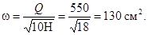
5. Исходя из условия равномерного распределения труб по всему периметру сваи-оболочки через 1,5-2 м (по п. 6.82), принимаем три трубы диаметром 80 мм.
6. Проверяем выполняемость условия
w1n ³ w,
где w1 - площадь проходного отверстия выбранной трубы (по табл. 2); n - количество труб. 50,3 × 3 > 130, следовательно, условие выполняется.
Таблица 2
Технические характеристики наконечников для подмывных стандартных труб при угле конусности 10°
|
Площадь проходного отверстия подмывной трубы wl, см2 |
Диаметр выходного отверстия наконечника d1, мм |
Площадь выходного отверстия наконечника w2, см2 |
Длина наконечника, мм |
|
|
37 |
10,7 |
17 |
2,3 |
114 |
|
50 |
19,6 |
22 |
3,8 |
160 |
|
68 |
36,2 |
30 |
7,1 |
218 |
|
80 |
50,3 |
36 |
10,0 |
262 |
|
106 |
88,0 |
48 |
18,1 |
332 |
|
131 |
135,0 |
59 |
27,4 |
412 |
Примечание. Отношение диаметров выходного и входного отверстий для всех наконечников принято равным 0,45.
Рекомендуемое
Общие положения
1. В качестве вяжущего для бетонов следует применять портландцементы марки не ниже 400, отвечающие требованиям п. 7.6 основного текста.
2. Заполнители должны удовлетворять требованиям ГОСТ 10268-80. В качестве крупного заполнителя рекомендуется применять щебень изверженных пород марки не ниже 1000. Содержание в щебне слабых зерен не должно превышать 5 %.
3. Для снижения расхода воды и достижения необходимого воздухосодержания в бетонную смесь следует обязательно вводить комплексные: добавки, состоящие из пластифицирующего компонента, например, ЛСТ, и воздухововлекающего компонента, например, СНВ, СДО, СНД или КТП.
Особенности проектирования состава бетона
4. При проектировании состава бетона водоцементное отношение, воздухосодержание бетонной смеси и расход воды должны соответствовать достижению заданной прочности и морозостойкости при минимальном расходе цемента и обеспечении заданной подвижности смеси.
Соотношение между величиной В/Ц, расходом воды и воздухосодержанием уплотненной бетонной смеси для получения бетонов марок F400 и F500 следует выбирать по графикам на рисунке.
Рекомендуется применять бетонные смеси с расходом воды до 180 л/м3.
5. Для повышения удобоукладываемости смеси при минимальном расходе воды следует использовать пластифицирующую добавку в оптимальной дозировке, не вызывающей ухудшения свойств бетона и не создающей значительных осложнений в режиме его тепловлажностной обработки. Обычно дозировку ЛСТ принимают в количестве 0,1 - 0,15 % от массы цемента.
Следует также использовать дополнительный эффект пластификации за счет воздухововлечения бетонной смеси.
При выборе необходимой подвижности смеси следует учитывать указания п. 7.29-7.31.
Рекомендуется применять бетонные смеси с осадкой конуса до 6 см.
6. Воздухосодержание бетонной свежеприготовленной смеси должно назначаться с учетом потерь вовлеченного воздуха в процессе транспортирования и уплотнения смеси, установленных опытным путем.
7. Ориентировочная водопотребность и объемная доля песка для бетона с комплексной добавкой определяется по табл. 1.
Для бетонов, приготовленных на песке с другой крупностью, а также имеющих другие подвижность, В/Ц и воздухосодержание, следует пользоваться поправками, приведенными в табл. 2.
Соотношение между величиной В/Ц, расходом воды и воздухосодержанием уплотненной бетонной смеси:
а - для получения бетона марки F400; б - для получения бетона марки F500
Таблица 1
|
Водопотребность бетонной смеси, л |
Объемная доля песка в смеси заполнителей при воздухосодержании, % |
|||
|
2 |
4 |
6 |
||
|
10 |
190 |
56 |
53 |
51 |
|
20 |
165 |
45 |
43 |
41 |
|
40 |
150 |
38 |
36 |
35 |
|
70 |
135 |
34 |
32 |
31 |
Примечание. Водопотребность и объемная доля песка даны для смесей на природном песке с модулем крупности 2,5 при В/Ц = 0,55, подвижности смеси 3 см по осадке конуса и содержании вовлеченного воздуха до 4 %.
Таблица 2
|
Изменение Мкр песка, В/Ц, подвижности и воздухосодержания смеси |
Изменение содержания песка в смеси заполнителей, % |
Изменение содержания воды, л/м3 |
|
Увеличение Мкр на 0,1 |
+ 0,5 |
- |
|
Уменьшение Мкр на 0,1 |
- 0,5 |
- |
|
Увеличение В/Ц на 0,05 |
+ 1 |
- |
|
Уменьшение В/Ц на 0,05 |
- 1 |
- |
|
Увеличение осадки конуса на 1 см |
- |
+ 2 |
|
Уменьшение осадки конуса на 1 см |
- |
-2 |
|
Увеличение воздухосодержания на 1 % |
- |
-3 |
|
Уменьшение воздухосодержания на 1 % |
- |
+ 3 |
8. По графикам на рисунке определяют В/Ц для трех-четырех значений воздухосодержания (от 2 до 6 %) при выбранной по п. 7 водопотребности.
Затем вычисляют Ц и величину 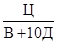
Затем строят график зависимости величины от воздухосодержания смеси.
По данным заданной прочности бетона Rб и активности цемента Rц определяют значение 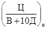
= 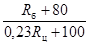
По дополнительно построенному графику = f (Д) и необходимому значению выбирают воздухосодержание смеси Дн.
Для выбранных значений водопотребности (п. 7) и воздухосодержания Дн на рис. выбирают значение В/Ц. Далее вычисляют расход цемента:
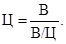
Дальнейший расчет состава бетона производят по способу абсолютных объемов с учетом воздухосодержания бетонной смеси.
9. Дозировку воздухововлекающего компонента определяют экспериментально в соответствии с требуемым воздухосодержанием смеси.
10. Путем пробных замесов уточняют расход воды и дозировку воздухововлекающего компонента. При необходимости заметного изменения расхода воды повторяют расчет состава бетона в соответствии с п. 8 и снова проверяют состав бетона в пробном замесе.
Производство бетонных работ
11. Приготовление бетонной смеси, введение в нее добавок и уплотнение ее осуществляют в соответствии с указаниями разд. 7.
12. Тепловлажностной обработке изделий должна предшествовать предварительная выдержка не менее 4 ч для бетонов из смеси с осадкой конуса до 3 см и не менее 5 ч для бетонов из смеси с осадкой конуса более 3 см.
13. Тепловлажностную обработку изделий рекомендуется осуществлять по режимам, выбираемым по табл. 3 в зависимости от массивности изделий, марки морозостойкости и подвижности бетонной смеси.
Таблица 3
|
Режимы тепловлажностной обработки |
||||
|
Для массивных изделий |
Для немассивных изделий |
|||
|
при марке |
при марке |
|||
|
F400 |
F500 |
F400 |
F500 |
|
|
0,5-3 |
1, 2 |
1 |
1, 2, 3 |
1, 2 |
|
3-6 |
1 |
1 |
1, 2 |
1 |
Примечания: 1. К массивным отнесены изделия с сечением более 50´50 см;
2. Характеристика режимов тепловлажностной обработки приведена в табл. 4.
Относительная влажность паровоздушной смеси в камере должна быть не менее 95 %.
14. Продолжительность изотермического прогрева устанавливается в соответствии с указаниями п. 7.46.
15. После тепловлажностной обработки изделий должны выдерживаться во влажных условиях в цехе или на складе не менее 100 град-сут. при температуре не ниже 5 °С.
Возможность сокращения указанного срока выдерживания изделий должна быть подтверждена испытанием на морозостойкость образцов конкретного бетона.
Таблица 4
|
Максимальная скорость подъема температуры, град/ч |
Максимальная температура изотермического прогрева, °С |
Максимальная скорость охлаждения, град/ч |
|
|
1 |
10 |
60 |
10 |
|
2 |
10 |
70 |
10 |
|
3 |
15 |
70 |
15 |
Рекомендуемое
1. Общие положения
1. Рекомендации распространяются на изготовление немассивных железобетонных конструкций морских сооружений из бетона особо высокой морозостойкости (F1000), работающих в тяжелых условиях эксплуатации (по ГОСТ 26633-85).
2. Рекомендации являются дополнением к действующим нормативным документам по производству бетонных работ и распространяются на изготовление сборных конструкций и возведение сооружений из монолитного бетона на побережье северных и дальневосточных морей.
3. Меры по защите конструкций от истирающего действия льда и других предметов, а также от температурных напряжений должны быть предусмотрены в проекте и настоящими рекомендациями не регламентируются.
2. Материалы для бетона и состав бетона
4. Для приготовления бетона должен применяться сульфатостойкий портландцемент или сульфатостойкий портландцемент с минеральными добавками по ГОСТ 22266-76.
5. Заполнители должны удовлетворять требованиям ГОСТ 10268-80. В качестве крупного заполнителя должен применяться щебень из изверженных горных пород.
6. В состав бетона обязательно вводится комплексная добавка, состоящая из смолы, нейтрализованной воздухововлекающей (СНВ) или ее заменителей и лигносульфоната технического (ЛСТ).
Дозировка СНВ выбирается в пределах 0,005-0,03 % от веса цемента с целью вовлечения в бетонную смесь 3-5 % воздуха (по объему). Дозировка ЛСТ принимается в количестве 0,1-0,2 % от веса цемента.
Возможно применение совмещенного, заранее приготовленного раствора СНВ и ЛСТ, стабилизированного альгинатом натрия, введенным в количестве 0,005-0,01 % от веса цемента. Приготовление указанного совмещенного раствора комплексной добавки производят в соответствии со справочным приложением 10.
7. При проектировании составов бетона учитывают следующие ограничения:
водоцементное отношение - не более 0,40;
подвижность бетонной смеси в момент укладки - не более 4 см по осадке стандартного конуса;
содержание вовлеченного воздуха после транспортирования и уплотнения бетонной смеси - 2-4 % по объему.
3. Производство бетонных работ
8. Твердение бетона должно происходить при температуре бетона не менее 5 °С и регулярном увлажнении только пресной водой.
9. Элементы конструкций, предназначенные только для работы в переменном уровне, должны выдерживаться при положительной температуре и увлажнении до приобретения 100 %-ной проектной прочности. При этом срок выдерживания бетона марки F1000 должен быть не менее 30 суток.
10. Разрешается изготавливать конструкции с применением тепловлажностной обработки. Температура изотермического прогрева должна быть не более 40 °С.
Скорости подъема и снижения температуры не должны превышать 10 °С/ч. Влажность паровоздушной смеси в камере должна быть не менее 95 %.
Справочное
Бетоны с комплексной добавкой типа СНВ + ЛСТ
1. К добавкам типа СНВ + ЛСТ относятся добавки СПД + ЛСТ, СДО + ЛСТ, КТП + ЛСТ.
2. При подборе конкретного состава бетона предварительно должна быть определена оптимальная доза ЛСТ. Для бетонов естественного твердения дозировка ЛСТ выбирается в диапазоне от 0,07 до 0,4 % от массы цемента, а для бетонов, подвергающихся тепловлажностной обработке - от 0,07 до 0,2 %.
Оптимальная дозировка выбирается путем испытания бетонных смесей с В/Ц, выбранным в соответствии с пп. 7.23, 7.24 при трех-четырех значениях дозировки ЛСТ. Бетонные смеси должны иметь при этом заданную подвижность, а прочность образцов бетона контролируется в заданные сроки (например, сразу после тепловлажностной обработки или в возрасте 28 суток). Для всех приготовленных смесей после уплотнения определяется содержание вовлеченного воздуха и расчетным путем по контролируемой объемной массе вычисляется расход воды.
Оптимальная дозировка ЛСТ соответствует минимальному содержанию в бетонной смеси объема воды и достижению наибольшей прочности при одинаковом расходе цемента.
3. При расчете состава бетона с комплексной добавкой определяют по табл. 1 водопотребность бетонных смесей с воздухосодержанием 2 % и с учетом примечаний к таблице.
Таблица 1
|
Расход воды на 1 м3 при осадке конуса 5 см, л |
||
|
бетон на гравии |
бетон на щебне |
|
|
10 |
180 |
190 |
|
20 |
156 |
165 |
|
40 |
140 |
150 |
|
70 |
125 |
136 |
Примечания: 1. При осадке конуса больше или меньше принятой в табл. 1 расходы воды соответственно увеличивают или уменьшают на 3 л на каждый сантиметр изменения осадки конуса.
2. При воздухосодержании бетонной смеси более 4 % расход воды уменьшают на 3 л на каждый дополнительный процент воздухосодержания.
3. Принятая по табл. 1 водопотребность с учетом примечаний 1, 2 подлежит уточнению в пробных замесах на конкретных материалах, выбранных для бетона.
4. Назначают минимальное воздухосодержание бетонной смеси в соответствии с п. 7.26 Правил (ч. I).
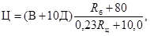
где Ц - расход цемента на м3 бетона, кг; В - водопотребность смеси, определенная по п. 3; Д - воздухосодержание по п. 4, %; Rб - прочность бетона в 28 дней, МПа; Rц - активность (марка) цемента, МПа.
(2)
где В/Ц - величина, определенная по расходу воды и цемента, полученным в пп. 3 и 5.
Если В/Ц > (В/Ц)мрз, то расход цемента изменяют в соответствии с формулой:
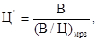
где Ц - расход цемента, откорректированный с учетом требований морозостойкости, В - водопотребность смеси по п. 3; (В/Ц)мрз - величина, определяемая по табл. 11 и 12 Правил, ч. I.
В этом случае целесообразно увеличить воздухосодержание смеси, благодаря чему может быть уменьшена ее водопотребность и снижен расход цемента.
7. Определяют объем заполнителей:
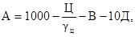
где А - абсолютный объем заполнителей, л; Ц - расход цемента по пп. 5, 6; gц - удельная масса цемента; В - водопотребность бетонной смеси; Д - воздухосодержание бетонной смеси, (%).
8. По табл. 2 определяют ориентировочную долю песка от общего количества заполнителей, ч, по объему.
Таблица 2
|
Объемная доля песка в смеси заполнителей, % |
||||||||
|
В бетоне на гравии при воздухосодержании, % |
В бетоне на щебне при воздухосодержании, % |
|||||||
|
2 |
4 |
6 |
8 |
2 |
4 |
6 |
8 |
|
|
10 |
53 |
52 |
51 |
52 |
56 |
53 |
51 |
53 |
|
20 |
42 |
41 |
39 |
40 |
46 |
43 |
41 |
42 |
|
40 |
35 |
33 |
32 |
33 |
38 |
36 |
35 |
36 |
|
OL |
31 |
30 |
29 |
30 |
34 |
32 |
31 |
32 |
Примечания: 1. Процент песка установлен для бетонных смесей на природном песке с модулем крупности 2,5 при В/Ц = 0,55.
2. При увеличении или уменьшении модуля крупности песка на 0,1 содержание песка соответственно увеличивается или уменьшается на 0,5 %.
3. При увеличении или уменьшении В/Ц на 0,05 содержание песка соответственно увеличивается или уменьшается на 1 %.
9. Определяют количество песка и щебня в смеси заполнителей:
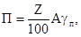
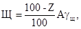
где П и Щ - расход песка и щебня на м3 бетона, кг; Z - процент песка в смеси заполнителей (по п. 8); А - абсолютный объем заполнителей (по п. 7), л; gпgщ - удельные массы соответственно песка и щебня, кг/л.
10. Путем пробных лабораторных замесов при оптимальной дозе ЛСТ и при изменяющейся дозировке СНВ от 0,005 до 0,03 % от веса цемента выбирают дозу СНВ, обеспечивающую необходимое воздухосодержание смеси. При этом в случае необходимости изменяют расходы воды с целью получения заданной подвижности (жесткости) бетонной смеси.
При применении других воздухововлекающих добавок (взамен СНВ) их дозировки выбирают в следующих диапазонах: СДО - 0,01-0,05 %, СПД - 0,005-0,02 %, КТП - 0,003-0,02 %.
11. После уточнения расхода воды (п. 10) производят повторный расчет по пп. 5-7, 9.
12. Кроме принятого по п. 8 количества песка назначают еще отличающиеся на ±1-2 % доли песка в смеси заполнителей и аналогично рассчитывают еще два состава бетона для опытных замесов. При этом расход воды и дозу воздухововлекающего вещества принимают как в первом составе.
13. Путем пробных замесов из трех составов выбирают состав с наибольшей подвижностью при хорошей связности и нерасслаиваемости бетонной смеси.
14. Осуществляют пробные замесы бетона выбранного состава в производственной бетономешалке с целью уточнения дозы воздухововлекающего вещества для получения необходимого воздухововлечения. При этом добавка ЛСТ вводится в оптимальной дозе.
Бетоны с добавкой ЩСПК или комплексной добавкой на основе ЩСПК
15. Состав бетона с добавками ЩСПК или комплексными добавками на основе ЩСПК назначается путем корректировки состава без добавок, подобранного проверенным на практике способом, обеспечивающим заданную подвижность бетонной смеси и получение требуемой прочности.
16. Комплексные добавки на основе ЩСПК (ЩСПК + СНВ, ЩСПК + СПД, ЩСПК + СДО) применяются в случаях, когда введение одной добавки ЩСПК в рекомендуемых дозировках не обеспечивает необходимого, из условия достижения морозостойкости, воздухосодержания бетонной смеси (по п. 7.26 Правил, ч. 1).
17. Дозировку добавки ЩСПК рекомендуется принимать в количестве 0,25-0,35 % от массы цемента. Дозировку воздухововлекающих компонентов (СНВ, СПД, СДО) подбирают, исходя из достижения необходимого воздухосодержания бетонной смеси. Ориентировочно их дозировки выбираются в диапазоне 0,005-0,02 % от массы цемента.
19. Состав бетона с добавкой может быть рассчитан по методу абсолютных объемов с учетом воздухосодержания уплотненной бетонной смеси и уменьшения расхода воды и цемента (п. 18).
20. Правильность подбора состава бетона с добавкой ЩСПК или с комплексной добавкой типа ЩСПК + СНВ проверяется испытанием прочности бетона, его водонепроницаемости и морозостойкости.
Бетоны с комплексной добавкой 136-41 + ЛСТ
21. Вначале путем пробных замесов на смесях с В/Ц, принимаемых по табл. 11 и 12 Правил, ч. I, выбирают оптимальную дозировку ЛСТ, обеспечивающую наилучший пластифицирующий эффект. Дозировка ЛСТ не должна в этих замесах превышать 0,15 % от массы цемента.
В пробные замесы одновременно вводится добавка эмульсии 136-41 из расчета 300 г на 1 м3 бетонной смеси.
22. Установив ориентировочно по пробным замесам необходимый для достижения заданной подвижности расход воды, рассчитывают по известным методам проектирования составов бетона расходы цемента, мелкого и крупного заполнителей. При этом водоцементное отношение, определяемое по существующим формулам для обеспечения прочности обычного бетона, без добавок не должно превосходить значений, приведенных в табл. 11 и 12 Правил, ч. I.
23. Осуществляют пробный замес бетона, состав которого рассчитан по п. 22, с введением в него добавки 136-41 и ЛСТ вместе с водой затворения. Откорректировав расход воды и цемента с целью достижения заданной подвижности смеси при сохранении значения В/Ц (по п. 22), формуют образцы-кубы для испытания на прочность после тепло-влажностной обработки, в том числе и в возрасте 28 суток. Режим тепло-влажностной обработки должен соответствовать требованиям пп. 7.45, 7.46 Правил.
Если получаемая прочность ниже требуемой, то следует уменьшить В/Ц с соответствующей корректировкой состава бетона.
Бетоны с добавками ГКЖ-10 (ГКП-10), ГКЖ-11 (ГКП-11)
24. Проектирование и подбор состава бетона следует производить расчетно-экспериментальным методом с учетом пластифицирующего и воздухововлекающего действия добавок.
25. Расчет состава бетона для опытных замесов производят в следующем порядке:
а) по общеизвестным формулам определяют водоцементное отношение из условий достижения заданной прочности;
б) ориентировочный расход воды при применении песка средней крупности и гравия определяют в зависимости от требуемой подвижности бетонной смеси и крупности заполнителя по графику (рис. 1). При применении щебня расход воды увеличивают на 10 л.
При расходе цемента свыше 400 % расход воды увеличивают на 10 л на каждые дополнительные 100 кг цемента. Для песка с другой крупностью расход воды уточняют экспериментально при контроле подвижности бетонной смеси;
в) определяют ориентировочный расход цемента по формуле
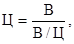
г) определяют коэффициент снижения водопотребности, вызываемый: пластифицирующим действием добавки, по табл. 3;
Таблица 3
|
Коэффициент снижения водопотребности К |
|
|
300-400 |
0,16-0,12 |
|
400-500 |
0,12-0,10 |
|
500-600 |
0,10-0,08 |
Примечание. Снижение водопотребности показано для случая введения добавки в количестве 0,6 кг на 1 м3 бетона в пересчете на сухое вещество.
д) определяют уточненные расход воды и водоцементное отношение:
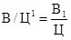
Выбранная для опытного замеса величина В/Ц1 не должна превышать значений, установленных табл. 11 л 12 Правил, ч. I;
е) определяют объем цементного теста, как сумму объемов цемента и воды;
ж) определяют расход щебня в кг по формуле:
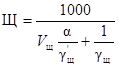
где
Vщ -
пустотность щебня в стандартном рыхлом состоянии (в формулу подставляется в
виде относительной величины); a - коэффициент раздвижки зерен
щебня раствором; 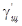
Коэффициент раздвижки зерен крупного заполнителя раствором устанавливают по табл. 4 в зависимости от расхода цементного теста на 1 м3.
Рис. 1. Водопотребность бетонной смеси, изготовленной с применением портландцемента, песка средней крупности и гравия с наибольшей крупностью:
1 - 80; 2 - 40; 3 - 20; 4 - 10 мм
Таблица 4
|
Коэффициент раздвижки |
|
|
200 |
1,22 |
|
250 |
1,32 |
|
300 |
1,42 |
|
350 |
1,50 |
|
400 |
1,52 |
Примечание. Данные таблицы соответствуют модулю крупности песка 2,5; при уменьшении модуля крупности песка на 1 коэффициент уменьшается на 0,1-0,15, однако он не должен быть менее 1,1;
и) определяют расход песка по формуле:
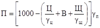
где П, Ц, В, Щ - соответственно расходы песка, цемента, воды, и щебня на 1 м3 бетона, кг;
gц, gп, gщ - соответственно удельные массы цемента, песка и щебня, кг/л.
Рис. 2. Количество вовлеченного воздуха в бетонной смеси с добавкой силиконата натрия в зависимости от объема цементного теста с наибольшей крупности щебня:
1 - 10; 2 - 20; 3 - 40 мм
В случае, если расчетный состав не обеспечивает заданной подвижности, в замес следует добавлять цемент и воду (при содержании в воде добавки из расчета 0,6 кг на 1 м3 в пересчете на сухое вещество) при сохранении В/Ц. Добавление цемента и воды с добавкой продолжают до тех пор, пока не будет достигнута заданная подвижность.
Если в первом замесе подвижность бетонной смеси превысит заданную, то в приготовленный замес следует добавить 5-10 % песка и щебня.
27. Перед изготовлением образцов для испытаний на прочность и для проверки на морозостойкость следует уточнить состав бетона с учетом п. 26, для чего следует определить фактический объем пробного замеса бетонной смеси, уплотненного способом, принятым в производственных условиях. Объем уплотненной бетонной смеси определяют по формуле
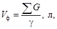
где
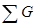
28. Объем вовлеченного в бетонную смесь воздуха определяют в соответствии с ГОСТ 10181.31-81.
29. Примерный объем вовлеченного воздуха в бетонной смеси с добавкой 0,6 кг силиконата натрия (в расчете на сухое вещество) показан на рис. 2 в зависимости от расхода цементного теста и крупности заполнителя.
Если фактический объем вовлеченного воздуха заметно превышает данные, приведенные на рис. 2, и достижение заданной прочности не может быть получено за счет пластифицирующего эффекта и уменьшения В/Ц, то количество добавки следует уменьшить при обеспечении воздухововлечения, приведенного на рис. 2.
30. Определяют расход материалов на 1 м3 бетона, пересчитывая его с учетом вовлеченного воздуха. Пересчет производится за счет уменьшения расхода песка на 1 м3 бетона по формуле
где П1 - пересчетный расход песка, кг; П - первоначальный расход песка, кг; V - объем вовлеченного воздуха, %; g - объемная масса бетонной смеси, кг/л.
31. Из откорректированного состава изготовляют образцы бетона для испытания на прочность и морозостойкость.
Рекомендуемое
Общие положения
1. Добавки вводятся в бетонную смесь в виде водных растворов удобной для работы концентрации. Выбор концентрации раствора следует производить с учетом точности применяемого дозирующего устройства так, чтобы обеспечить точность дозирования веществ добавки, регламентированную главой СНиП 3.03.01-87.
Обычно на заводах ЖБК применяют растворы добавок с концентрацией от 2 до 10 %.
2. Необходимое количество концентрата добавки (жидкого, твердого, порошкообразного) для приготовления определенного количества водного раствора с концентрацией, соответствующей п. 1 настоящего приложения, определяют по формуле
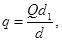
где q - необходимое количество концентрата добавки для заправки приготовленной емкости, кг; Q - количество приготовляемого водного раствора добавки, кг; d1 - содержание безводного вещества добавки в 1 кг водного раствора добавки, кг; d - то же в 1 кг исходного концентрата, кг.
Количество воды для разбавления концентрата берут несколько меньше определяемого по формуле:
B = Q - q,
где В - количество воды, необходимое для разбавления концентрата добавки для получения водного раствора выбранной концентрации, кг.
Приготовление водных растворов добавок ЛСТ, СНВ, СПД, СДО, КТП, ЩСПК
3. Водные растворы добавок готовят в емкостях путем растворения в воде с температурой 60-70 °С твердых, пастообразных или жидких концентратов. Концентрат ЩСПК можно растворить в холодной воде. После полного растворения концентрата (с помощью перемешивания) раствор через сетчатый фильтр (с отверстиями до 1 мм) переливают в другую емкость. После остывания раствора до 20 °С доводят его концентрацию до заданной путем добавления в раствор воды. Концентрация определяется по плотности раствора (с помощью ареометра) в соответствии с табл. 1.
Таблица 1
|
Плотность растворов добавок при 20 °С, г/см3 |
||||||
|
добавки |
||||||
|
ЩСПК |
СДО |
КТП |
СПД |
ЛСТ |
СНВ |
|
|
2 |
1,013 |
1,003 |
- |
1,009 |
1,005 |
|
|
3 |
1,015 |
1,005 |
- |
1,003 |
1,013 |
1,009 |
|
4 |
1,025 |
1,007 |
- |
1,006 |
1,017 |
1,012 |
|
5 |
1,030 |
1,008 |
1,001 |
1,009 |
1,021 |
1,015 |
|
6 |
1,037 |
1,01 |
- |
1,012 |
1,025 |
1,018 |
|
7 |
1,043 |
1,012 |
1,002 |
1,014 |
1,029 |
1,021 |
|
8 |
1,049 |
1,014 |
- |
1,016 |
1,033 |
1,024 |
|
9 |
1,055 |
1,015 |
1,004 |
1,019 |
1,038 |
1,027 |
|
10 |
1,061 |
1,017 |
1,005 |
1,021 |
1,043 |
1,03 |
|
12 |
1,073 |
1,021 |
1,006 |
1,026 |
1,053 |
1,036 |
|
14 |
1,085 |
1,024 |
1,008 |
1,03 |
1,063 |
1,042 |
|
16 |
1,097 |
1,027 |
1,009 |
1,034 |
1,073 |
1,048 |
|
18 |
1,109 |
1,031 |
1,011 |
1,038 |
1,083 |
1,054 |
|
20 |
1,122 |
1,034 |
1,012 |
1,042 |
1,091 |
1,06 |
|
25 |
- |
1,043 |
1,017 |
1,052 |
1,117 |
1,075 |
|
30 |
- |
1,052 |
1,022 |
1,061 |
1,144 |
1,089 |
|
45 |
- |
1,078 |
- |
1,09 |
1,234 |
1,135 |
4. Растворы должны храниться в деревянной, стеклянной или стальной таре. Применение оцинкованной или алюминиевой посуды запрещается.
Приготовление водного раствора омыленной абиетиновой смолы (абиетата натрия)
В стеклянной посуде или металлической (кроме оцинкованной или алюминиевой) приготавливается 2 %-ный раствор едкого натра (NaОН). После полного растворения едкого натра раствор нагревают до 70-80 °С и в него небольшими порциями вводят измельченную абиетиновую смолу из расчета 100 г на каждый литр раствора едкого натра. Смесь поддерживается в нагретом состоянии до полного растворения абиетиновой смолы. Смолу в раствор следует вводить постепенно, так как введение ее вызывает интенсивное пенообразование. Во избежание возможного комкования порошка смолы, а также в связи с пенообразованием при введении ее в раствор щелочи, добавление смолы и процесс ее растворения должны производиться при интенсивном перемешивании раствора.
После окончания приготовления раствора объем его доводится до первоначального добавлением количества воды, выкипевшей в период варки раствора. Полученный раствор будет содержать в 1 л 100 г исходной абиетиновой смолы, что и учитывается при всех расчетах дозировки раствора.
6. При приготовлении растворов омыленной абиетиновой смолы другой концентрации количество щелочи определяется из расчета 0,2 весовой единицы щелочи (считая на сухое вещество) на одну весовую единицу твердого вещества смолы.
7. Раствор омыленной абиетиновой смолы должен храниться в деревянной, стеклянной или железной таре. Применение оцинкованной или алюминиевой посуды не разрешается.
Приготовление водного раствора CHB + ЛCT + альгинат натрия
8. С целью предупреждения коагуляции смеси водных растворов добавок ЛСТ и СНВ и приготовления их совместного раствора применяется альгинат натрия.
Альгинат натрия - технический продукт, получаемый при переработке морских водорослей. Он представляет собой порошок или пластинки, легко растворяющиеся в воде. Альгинат натрия изготавливается Архангельским водорослевым комбинатом Главного управления «Севрыба».
9. Применение альгината натрия как стабилизатора позволяет использовать ЛСТ и СНВ в виде заранее приготовленного совместного раствора. Это упрощает технологию приготовления и дозирования добавки, для чего достаточен один расходный бак и один дозатор. При отсутствии альгината натрия добавки ЛСТ и СНВ приготавливаются и дозируются раздельно.
10. Дозировки ЛСТ и СНВ выбираются в соответствии со справочным приложением 9.
В пробных замесах добавки ЛСТ и СНВ вводятся раздельно, альгинат натрия не вводится.
Альгинат натрия вводят в состав бетона в количестве 0,005-0,01 % от веса цемента.
11. Водный раствор добавки СНВ + ЛСТ + альгинат натрия может быть приготовлен двумя способами:
а) последовательным растворением компонентов добавки в одной емкости;
б) смешением концентрированных растворов веществ, составляющих комплексную добавку.
Приготовление комплексной добавки по первому способу заключается в последовательном полном растворении в подогретой до 70 °С воде воздухововлекающего компонента СНВ, альгината натрия и в последнюю очередь - пластифицирующего компонента ЛСТ в соотношении, определенном пробными замесами.
По второму способу приготовление трехкомпонентной комплексной добавки осуществляется путем раздельного приготовления концентрированных растворов компонентов, добавки и смешения их в количествах, соответствующих дозировкам, определенным пробными замесами.
12. Полученная комплексная добавка вводится через один дозатор в воду затворения в количестве, определяемом в расчете на сухое вещество ЛСТ по отношению к весу цемента с контролем воздухосодержания бетонной смеси.
13. В тех случаях, когда потребитель вместо СНВ получает абиетиновую смолу, она должна быть омылена в соответствии с п. 5 настоящего приложения. Дозировка в бетон омыленной абиетиновой смолы уточняется в пробных замесах. После этого приготовляют комплексную добавку следующим способом: сначала разводят водой раствор омыленной абиетиновой смолы до концентрации, в сто раз превышающей его дозировку по отношению к весу цемента, затем в этот раствор, подогретый до 50 °С, вводят 0,5-1 % от веса воды альгинат натрия, а после его растворения вводят туда же ЛСТ в количестве 10 % от веса воды и полностью растворяют. Полученный раствор комплексной добавки вводят через дозатор в бетонную смесь как указано выше.
Приготовление водных растворов ГКЖ-10 (11) и ГКП-10 (11)
14. Добавки ГКЖ-10 (11) поставляются на заводы железобетонных конструкций или строительство в виде водных растворов в стеклянных бутылях или металлических бочках, а добавки ГКП-10 (11) - в виде порошков, затаренных в бумажные мешки. Каждая партия силиконатов натрия должна иметь паспорт. Применять силиконаты натрия при отсутствии паспортов завода-изготовителя запрещается.
15. Водные растворы и порошки должны храниться в таре, а порошки в сухом помещении при температуре от 0 до 30 °С.
16. Кремнийорганические жидкости ГКЖ-11 и ГКЖ-10, поступающие в виде водно-спиртовых растворов с концентрацией 30±5 %, могут непосредственно использоваться в производстве. В случае необходимости уменьшения концентрации жидкость ГКЖ-11 или ГКЖ-10 разбавляют водой.
Выбранную с учетом п. 1 настоящего приложения их концентрацию контролируют по плотности водного раствора в соответствии с табл. 2.
Таблица 2
|
Плотность раствора при 20 °С, г/см3 |
Концентрация раствора, % |
Плотность раствора при 20 °С, г/см3 |
|||||
|
ГКЖ-10 (11) |
ГКП-10 |
ГКП-11 |
ГКЖ-10 (11) |
ГКП-10 |
ГКП-11 |
||
|
1 |
1,006 |
- |
- |
12 |
1,076 |
1,087 |
1,082 |
|
2 |
1,012 |
1,010 |
1,011 |
14 |
1,088 |
1,103 |
1,096 |
|
3 |
1,019 |
1,018 |
1,018 |
16 |
1,101 |
1,119 |
1,110 |
|
4 |
1,025 |
1,025 |
1,025 |
18 |
1,114 |
1,135 |
1,124 |
|
5 |
1,031 |
1,033 |
1,032 |
20 |
1,127 |
1,150 |
1,138 |
|
6 |
1,038 |
1,041 |
1,040 |
22 |
1,139 |
1,165 |
1,152 |
|
7 |
1,044 |
1,049 |
1,047 |
24 |
1,151 |
1,180 |
1,166 |
|
8 |
1,050 |
1,057 |
1,054 |
26 |
1,164 |
1,195 |
1,180 |
|
9 |
1,057 |
1,064 |
1,061 |
28 |
1,177 |
1,21 |
1,194 |
|
10 |
1,063 |
1,072 |
1,068 |
30 |
1,190 |
1,225 |
1,208 |
17. При применении порошков ГКП-11 или ГКП-10 их водные растворы готовят на производстве. Для растворения используют воду, нагретую до 40-50 °С. Раствор фильтруют через сетчатый фильтр с отверстиями 0,5 мм. Концентрацию растворов определяют в соответствии с табл. 2 по их плотности.
Рекомендуемое
1. Принципиальная схема установки для приготовления и дозирования одной добавки показана на рис. 1.
Рис. 1. Схема установки для приготовления и дозирования растворов добавок:
1 - приготовительный бак; 2 - бак рабочего раствора; 3 - расходный бак; 4 - дозатор; 5 - кран; 6 - насос
Приготовление раствора добавки производится в приготовительном баке. Сюда подается вода, осуществляется ее подогрев и после загрузки концентрата производится перемешивание (механическим способом или с помощью сжатого воздуха) до полного его растворения. Из приготовительного бака раствор через фильтры поступает в бак рабочего раствора, где регулируется и устанавливается рабочая концентрация раствора. Эти баки и следует регулярно промывать водой. Для этой цели они должны иметь отводы в канализацию.
Готовый раствор добавки с помощью насоса подается в расходный бак. Из него раствор самотеком поступает в дозатор и затем с помощью крана сливается в воду затворения.
2. Объемы трех баков подбираются в зависимости от производительности бетоносмесительного узла из расчета обеспечения его раствором добавки на 1-3 смены работы.
3. Все баки должны иметь изнутри антикоррозийное покрытие. Для этой цели может быть использована перхлорвиниловая эмаль любой марки.
4. Рекомендуется использовать бронзовые вентили и краны тех же марок, что и для воды.
5. Наиболее важным узлом установки является дозирующее устройство вместе с системой управления. От конструкции этого узла зависит точность дозирования и надежность работы установки.
Рекомендуется использовать дозаторы емкостью 3-5 литров (для добавок СНВ, СПД, 136-41) и емкостью 10-12 литров (для добавки ЛСТ).
Рис. 2. Схема дозатора ПКБ ЦНИИС:
1 - трубка; 2 - устройство для фиксации поршня; 3 - поршень; 4 - корпус; 5 - двухходовой кран; 6 - расходный бак
6. При производстве бетонных работ в полигонных условиях следует использовать дозаторы простейшей конструкции с редко изменяемой дозой. Схема такого дозатора показана на рис. 2. Объем дозы задается с помощью передвижного поршня, который фиксируется в заданном положении с помощью специального устройства. Набор дозы и ее слив в воду затворения производится с помощью двухходового крана. После набора дозы уровни жидкости в расходном баке и вертикальной трубе дозатора одинаковы (сообщающиеся сосуды). Длина трубки подбирается так, чтобы ее верхний конец был не ниже максимального уровня раствора в расходном баке. Дозатор можно использовать с дистанционным управлением, при этом двухходовой кран оборудуется пневмоприводом.
7. На заводах ЖБК следует использовать многопозиционные автоматические дозаторы, позволяющие отмерять заданную дозу с пульта оператора. Многопозиционный дозатор оборудуется набором датчиков, например, электродов или герконов (6-10 шт.), фиксирующих уровень раствора в дозаторе. Положение датчиков можно изменять вручную.
При дозировании выполняются следующие операции:
а) оператор с помощью многоконтактного переключателя включает в работу датчик, соответствующий заданной дозе;
б) при нажатии кнопки «дозировка» двухходовой кран поворачивается в положение «набор дозы». Поворот крана в положение «слив дозы» происходит автоматически, когда уровень раствора в дозаторе достигнет датчика. После этого дозатор готов к следующему дозировочному циклу.
8. Для каждого из компонентов комплексной добавки используется отдельная установка для приготовления и дозирования добавок.
Справочное
1. Теплоизоляционная защита конструкций может быть выполнена:
а) в виде монолитного пояса путем заливки в опалубку горячей битумно-минеральной смеси;
б) в виде облицовки поверхности бетона готовыми плитами из битумно-минеральной смеси путем установки их в опалубку. В обоих случаях по окончании работ опалубка должна быть оставлена на месте в качестве поддерживающего устройства.
Устройство теплоизоляционного пояса под водой на кратковременно обнажаемых участках сооружения рекомендуется выполнять путем установки готовых плит из битумно-минеральных смесей.
2. Для приготовления битумно-минеральной смеси в качестве органического вяжущего вещества используется нефтяной битум марки БНД-130/200, удовлетворяющий требованиям ГОСТ 22245-76.
При отсутствии битума марки БНД-130/200 допускается применять более вязкие битумы (по ГОСТ 22245-76) с разжижением их битумами марок СГ-70/130 и СГ-130/200 (ГОСТ 11955-82) до получения смеси битумов, имеющей величину глубины проникания иглы в пределах значений для битума БНД-130/200. В особых случаях, в зависимости от имеющегося оборудования, условий производства работ и условий службы сооружений, может быть допущено применение битумов марок БНД-90/130 и БНД-60/90 (ГОСТ 22245-76) без их разжижения по согласованию с проектной организацией.
3. В качестве заполнителя могут быть использованы все виды дробленых котельных шлаков, естественные и искусственные пористые материалы, гранулометрический состав которых должен соответствовать данным, приведенным в нижеследующей таблице.
Гранулометрический состав минеральных заполнителей
|
Размеры отверстий, мм |
20 |
10 |
5 |
2,5 |
1,25 |
0,63 |
0,315 |
0,14 |
Менее 0,14 |
|
Частные остатки на ситах, %, по массе |
0 |
6,5 |
9,2 |
6,3 |
11,2 |
5,1 |
7,0 |
17,7 |
37 |
|
Полные остатки, % |
0 |
6,5 |
15,7 |
22,0 |
33,2 |
38,3 |
45,3 |
63,0 |
100 |
Для снижения стоимости приготовления минеральной смеси допускается уменьшение числа фракций до трех: 20-5 мм - 16 %; 5-0,3 мм - 30 %; менее 0,3 мм (до пылевидных частиц) - 54 %.
4. Для приготовления битумно-минеральной смеси должен использоваться заполнитель без загрязняющих примесей.
5. Для дробления крупных фракций минеральных заполнителей рекомендуется применять валковые дробилки, для получения пылевидной фракции следует произвести дополнительный их помол в шаровых мельницах. В случае отсутствия помольных установок допускается замена пылевидной фракции отходами цементов (при зачистке складов), золой-уносом, минеральным порошком (употребляемым при приготовлении асфальтобетона).
6. Состав битумно-минеральной смеси определяется отношением по массе количества битума к количеству заполнителя и должен находиться в пределах от 1 : 3 до 1 : 2, т.е. содержание битума по массе должно составлять от 25 до 33 % от массы смеси. Оптимальный расход битума устанавливается опытным путем.
7. При подборе смеси следует стремиться к получению наиболее плотной смеси заполнителей, по своему гранулометрическому составу отвечающей требованиям, указанным в таблице.
8. Объемная масса битумно-минеральной смеси должна находиться в пределах от 1,5 до 1,8 т/м3.
9. Образцы битумно-минеральной смеси подобранного состава должны пройти полные физико-механические испытания в соответствии с ГОСТ 12801-84 с тем изменением, что вместо образцов-цилиндров для испытаний на сжатие изготовляют образцы-кубы 10´10´10 см, уплотняемые вибрированием или штыкованием.
10. Битумно-минеральная смесь должна удовлетворять следующим основным требованиям, обеспечивающим долговечность защитных покрытий в процессе эксплуатации:
а) деформативная устойчивость в диапазоне температур от минус 40 до плюс 40 °С;
б) коррозийная устойчивость в условиях моря (водостойкость и морозостойкость);
в) устойчивость против старения.
1.1. Основные физико-технические характеристики битумно-минеральных смесей должны соответствовать следующим значениям:
а) водонасыщение не более 3,5 % по объему;
б) набухание не более 1 % по объему;
в) временное сопротивление сжатию при температуре 20 °С R20 не менее 1,5 МПа (для пластичных и малопластичных смесей, укладываемых с уплотнением);
г) то же при 50 °С R50 не менее 0,6 МПа;
д) временное сопротивление растяжению при температуре
20 °С 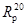
е) коэффициент водоустойчивости 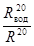
ж) коэффициент теплоустойчивости 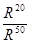
12. Приготовление битумно-минеральной смеси может быть организовано на одном из стационарных асфальтобетонных заводов, расположенном в районе строительства. При отсутствии завода приготовление битумно-минеральной смеси необходимо организовать на строительстве с применением передвижных установок.
13. Процесс приготовления таких смесей аналогичен приготовлению асфальтобетонов и состоит из следующих операций:
а) дробление, грохочение и рассев минеральных материалов;
б) сушка и нагрев минеральных материалов;
в) дозировка вяжущего и заполнителей;
г) смешение компонентов смеси в горячем состоянии.
14. В зависимости от объема работ, выбранного способа устройства защитного пояса и имеющегося оборудования могут быть применены следующие варианты устройства защитного покрытия:
I вариант - приготовление битумно-минеральной смеси производится на месте с применением передвижной смесительной установки. Укладка горячей смеси выполняется методом литья или методом бетонирования с помощью вибрирования с пригрузом, а в недоступных для вибраторов местах - путем трамбования.
II вариант - битумно-минеральная смесь приготавливается на асфальтобетонном заводе и в горячем состоянии транспортируется к месту строительства. Укладка производится так же, как и в варианте 1.
III вариант - устройство защитного покрытия производится путем облицовки элементов конструкций плитами, изготавливаемыми на асфальтобетонном заводе. Заделка стыков и швов выполняется с применением горячего битума и битумно-минеральной смеси с мелким заполнителем (до 2 мм).
IV вариант - на асфальтобетонном заводе приготавливаются плиты из битумно-минеральной мастики (смесь без крупного заполнителя), которая затем на месте строительства разогревается в котлах с добавлением крупного заполнителя и в необходимых случаях - битума для получения битумно-минеральной смеси нужного состава.
V вариант - битумно-минеральная смесь приготавливается на месте строительства в открытых котлах и используется для изготовления защитных плит и для заливки этой смеси непосредственно в опалубку.
При устройстве покрытия по I и IV вариантам обеспечивается сплошность и монолитность защитного покрытия, что в значительной степени определяет высокое качество тепловой защиты.
По II варианту это может быть достигнуто при четкой организации транспортировки смеси от завода до места строительства по строго установленному графику и с подогревом смеси.
По III варианту для получения сплошности и монолитности теплоизоляционного покрытия желательно применение плит по возможности наибольших размеров с тщательной проработкой швов горячим битумом. Размер плит должен быть установлен в зависимости от условий транспортирования и кранового оборудования.
V вариант устройства защиты допускается применять только при небольшом объеме работ.
15. Перед употреблением в дело битум должен быть обезвожен. При приготовлении битумно-минеральной смеси вручную допускается применение заполнителей в воздушно-сухом состоянии.
16. Температура нагрева битума и битумно-минеральной смеси не должна превышать 180-190 °С. Температура смеси при укладке должна быть в пределах 160-170 °С. Укладывать остывшую смесь запрещается.
17. Во всех случаях должна быть организована доставка горячей смеси к месту укладки с минимальной потерей тепла; допускается снижение температуры смеси не более чем на 20 °С.
18. Работы по устройству защиты путем укладки горячей битумно-минеральной смеси в опалубку на сооружении проводятся в летнее время в сухую погоду. В дождливую погоду работы должны быть прекращены.
19. Укладка горячей смеси должна производиться по возможности большими порциями, поэтому должно быть организовано непрерывное и равномерное поступление смеси к месту производства работ.
Укладку следует прерывать вертикальными швами путем установки временных дощатых ограждений.
20. С возобновлением укладки следует обеспечить достаточный разогрев и оплавление ранее уложенной и затвердевшей смеси для получения плотного соединения на участках стыка и создания сплошности слоя на всем его протяжении.
21. Битумно-минеральная смесь, применяемая для устройства защитного покрытия путем заливки ее в горячем состоянии за опалубку, должна иметь литую консистенцию. Смесь при такой консистенции быстро расплывается в заполняемом объеме и укладка ее производится без вибрирования. При более вязких смесях с медленным расплывом должно применяться штыкование или вибрирование с пригрузом. Такие смеси следует применять для изготовления облицовочных плит.
22. Продолжительность вибрирования зависит от температуры, степени пластичности смеси, типа вибратора и других факторов и должна устанавливаться опытным путем.
23. Распалубку плит, изготовляемых вне сооружения, следует производить после того, как они примут температуру окружающего воздуха.
24. Летом плиты должны храниться в затененных местах в штабелях высотой до 1 м и с обязательной установкой прокладок между ними.
25. В теплое время года с температурой воздуха не ниже 10 °С транспортирование плит с завода к месту строительства следует производить в специальных кассетах рамочного типа.
26. Конструкция защитного покрытия из плит, их размеры и способы крепления к сооружению должны включаться в состав проекта.
27. Перед установкой плит на место в зоне переменного уровня насухо (в период отлива) вся поверхность опалубки и прилегающая к ней поверхность плиты, а также бетонная поверхность в пределах зоны защиты должна быть покрыта горячим битумом. Перед установкой плит в подводной части вся поверхность плит также покрывается толстым слоем горячего битума.
28. Заделка швов между плитами шириной до 10 мм производится путем заливки их горячим битумом, а более широких - горячей битумно-минеральной смесью с мелким заполнителем (фракции меньше 2 мм).
29. В процессе приготовления битумно-минеральной смеси должен быть установлен контроль за дозированием материалов, качеством перемешивания, температурным режимом и качеством исходных материалов. Основные показатели работы смесительной установки и результаты контроля фиксируются в рабочем журнале.
30. Контроль прочности битумно-минеральной смеси производится на образцах-кубах 10´10´10 см, взятых при укладке ее в изделия.
На каждые 50 м3 смеси производится определение следующих физико-механических свойств: объемной массы, плотности, водонасыщения, набухания, временного сопротивления сжатию (при температуре воздуха 18-20 °С).
За исключением формы образцов и способа их приготовления испытание битумно-минеральной смеси производится в соответствии с указаниями ГОСТ 12801-84.
Примечание. Опытные образцы из смеси литой консистенции изготавливаются без уплотнения, а из пластичных смесей - с применением вибрирования или штыкования.
31. При приемке работ по устройству теплогидроизоляционной защиты должно быть проверено соответствие выполненных конструкций проекту.
32. Устройство теплогидроизоляционной защиты относится к скрытым работам и должно контролироваться в процессе приготовления и укладки смеси на место или монтажа защитного пояса на сооружении.
В особых случаях контроль качества теплоизоляционного материала производится путем физико-механических испытаний образцов, вырезанных из конструкций.
Справочное
Общие положения
1. Номенклатура конструктивных элементов, пропитка которых битумом обоснована условиями их службы, определяется возможностями производства и наличием специального оборудования.
В примерный перечень таких элементов можно внести наголовники свай, составные сваи, плиты, массивы, блоки верхнего строения.
2. Пропитка бетонных и железобетонных элементов производится горячим битумом в ваннах (при атмосферном давлении) или в автоклавах (при повышенном давлении).
3. Изделия, предназначенные для пропитки, должны иметь прочность не ниже проектной.
Пропитка при повышенном давлении
4. Элементы, подвергаемые пропитке, должны быть высушены (сухим воздухом) в течение 20-24 ч, при равномерном повышении температуры со скоростью 6 °С в час с таким расчетом, чтобы к концу 20-часового периода сушки температура достигла 115-120 °С. Эта температура должна поддерживаться не менее 4 ч.
5. При автоклавной пропитке по окончании периода сушки во избежание остывания изделий они должны сразу же помещаться для обработки в пропиточный цилиндр, в котором происходит дальнейшее их обезвоживание в пространстве с вакуумом в пределах 575-700 мм рт. ст. до момента выпуска битума. Продолжительность выдерживания в вакууме должна быть не менее 1 ч.
6. Битум должен вводиться в пропиточный цилиндр при температуре около 120 °С при поддерживании вакуума в течение всей продолжительности выпуска битума.
7. По окончании заполнения цилиндра битумом вакуум должен быть заменен давлением воздуха в пределах 10-12 ат. Продолжительность пропитки под этим давлением для плотных бетонов должна быть не менее 12 ч.
8. Заданная температура битума должна поддерживаться в течение 2 ч с последующим постепенным ее снижением со скоростью, не превышающей 6 °С в час. При достижении температуры примерно 90-95 °С битум может быть удален или оставлен в цилиндре до конца периода нахождения под давлением.
9. После окончания пропитки следует охладить изделия до температуры воздуха в помещении со скоростью не более 5 °С в час. Охлаждение должно производиться на месте в пропиточном цилиндре или в специальной камере воздушного охлаждения.
10. По этому способу глубина пропитки должна быть в пределах 2-5 см для бетона с маркой по водонепроницаемости В-4 и 1,5-2 см для более плотных бетонов.
11. Для обеспечения более глубокой пропитки в плотных бетонах, рекомендуется перед началом пропитки очищать их поверхность пескоструйным аппаратом на глубину до 1 мм.
12. Для пропитки бетона рекомендуется применять битум марки БНД-60/90 (ГОСТ 22245-76).
Пропитка при атмосферном давлении
13. Обработка изделий в случае пропитки при атмосферном давлении должна производиться в специальных ваннах, размеры которых принимаются в соответствии с габаритами пропитываемых изделий и их количеством при одновременной пропитке.
14. Пропиточные ванны должны быть вмонтированы в специально устроенные нагревательные печи с топками, работающими на длиннопламенном топливе (дрова, жидкое топливо).
15. Режимы сушки до пропитки и охлаждения изделия после пропитки следует принимать те же, что и при пропитке при повышенном давлении.
16. Изделия, нагретые при сушке, должны погружаться в пропиточную ванну при температуре битума 90-100 °С. Дальнейший разогрев битума до 170-180 °С следует вести со скоростью не выше 10 °С в час.
17. Продолжительность пропитки с момента погружения изделий должна быть не менее 24 ч. Уровень битума в ваннах в течение пропитки должен перекрывать на 15-20 см по высоте пропитываемые изделия.
18. По истечении срока пропитки находящиеся в ванне изделия должны быть вместе с битумом охлаждены до температуры 90-95 °С и после этого выгружены и направлены в специальные камеры для охлаждения со скоростью не выше 10 °С в час.
19. При этом способе глубина пропитки битумом БНД-60/90 должна быть не менее 0,3 см.
20. Для каждого состава должны быть изготовлены две группы контрольных образцов. Одна группа образцов пропитывается битумом одновременно с первой партией изделий, другая - остается непропитанной. Количество образцов в каждой группе должно быть не менее: для испытания на морозостойкость 9 кубов 10´10´10 см, для определения прочности на сжатие - 3 куба 10´10´10 см, для определения динамического модуля упругости - 3 балочки 10´10´50 см, для испытания на водонепроницаемость - 6 цилиндров высотой и диаметром 15 см. Для каждой последующей партии пропитываемых изделий из бетона данного состава изготавливаются 3 куба 10´10´10 см для испытания на сжатие и 3 балочки 10´10´50 см для определения динамического модуля упругости.
Опорные поверхности непропитанных образцов перед испытанием на сжатие покрываются тонким слоем битума и бумагой.
Опорные поверхности пропитанных образцов, испытываемых на сжатие, также покрываются бумагой.
Морозостойкость и водонепроницаемость пропитанного бетона определяются в одной из первых пропиток. В дальнейшем контроль пропитки проводится по глубине пропитки на образцах, испытываемых на сжатие и по значению модуля упругости на образцах-балочках.
21. В процессе пропитки как при повышенном, так и при атмосферном давлении должен быть установлен постоянный контроль за соблюдением заданного режима. Давление и температура в автоклаве, а также температура битума в ванне должны записываться в рабочий журнал по пропитке через каждый час.
22. Контроль качества пропитки и определение прочности бетона в обоих способах обработки следует проводить по результатам испытания опытных образцов бетона, пропитанных одновременно с изделиями.
Справочное
1. Для пропитки используется березовая древесина. До пропитки березовый пиломатериал должен быть раскроен на заготовки в соответствии с подготовленной спецификацией. Заготовки не должны иметь дефектов: гнили, сквозных трещин, табачных выпадающих или выпавших сучков, ложного ядра. При раскрое материала заготовкам должны быть даны припуски на усушку.
2. Перед пропиткой влажность древесины не должна превышать 22 %, для чего осуществляют сушку древесины при температуре 60-70 °С и психрометрической разности 6 °С.
3. Высушенные заготовки перед пропиткой полностью обрабатываются для придания им формы и профилей согласно чертежам детали. После этого детали накалываются на специальном наколочном станке для более глубокой пропитки смолой. Глубина наколов должна быть не менее 12 мм при толщине детали 40-45 мм и не менее 15 мм при большей толщине. Наколы располагаются с шагом 20 мм вдоль элемента с расстоянием 15 мм между рядами со смещением наколов в смежных радах на 5 мм.
Наколочные ножи должны иметь размер у основания 14´3 мм, а у острия 3´1 мм.
4. Для пропитки деталей применяется фенолоформальдегидная смола СП-2 марки А. Смола должна храниться при температуре от 0 до 10 °С, но не более 20 °С. Гарантийный срок хранения смолы СП-2 - три месяца. Хранить ее более длительное время не рекомендуется. Пригодность смолы определяется ее вязкостью. При вязкости более 15 °Э смолу можно разбавить водой до нормальной вязкости 6-15 °Э. Допускается разбавление смолы водой в пропорции 1 : 0,7.
В смолу в целях предотвращения отрицательного воздействия на древесину морской воды и древоточцев добавляют пентахлорфенол (препарат П-4), выпускаемый по ТУ ЦНИИМОДа.
Пентахлорфенол представляет собой мелкие гранулы желтовато-серого цвета и имеет следующий состав: пентахлорфенол - 95-98 %, этиленгликоль - около 1 %, хлорид натрия - около 1 %, вода - не более 0,5 %. Пентахлорфенол слабо растворим в воде (почти не вымывается); в смоле хорошо растворяется в количестве до 5 % от ее массы при температуре ее 20-25 °С.
Пентахлорфенол не снижает механических свойств древесины и ее огнестойкости, не вызывает коррозии черных металлов, Он принадлежит к относительно маловредным веществам, предохраняющим древесину как от гниения, так и от действия древоточцев.
5. Применяемый при пропитке древесины пропиточный состав имеет следующую рецептуру (в массовых частях): смола СП-2 марки А-100, пентахлорфенол (препарат П-4)-5, вода в количестве, достаточном для получения вязкости 6-15 °Э.
В смолу засыпают пентахлорфенол в гранулах и перемешивают 15-20 мин (при комнатной температуре) до полного растворения пентахлорфенола.
Пропитку древесины указанным выше пропиточным составом производят при температуре 15-20 °С. При более высокой температуре пропитывать не рекомендуется, так как в этом случае при многократном использовании состава для пропитки древесины вязкость его повышается.
6. Пропитка деталей производится в пропиточном цилиндре, позволяющем создать внутри цилиндра вакуум 650 мм рт. ст. и давление 6 ат.
7. Заготовленные и наколотые детали загружаются в пустой пропиточный цилиндр. После закрытия цилиндра крышкой в нем создается вакуум 650 мм рт. ст., который выдерживается в течение 30 мин. Не снижая вакуума, в цилиндр заливают пропиточный состав с таким расчетом, чтобы все детали были полностью погружены в него. Так как древесина значительно легче смолы, должны быть приняты меры против всплывания деталей. Рекомендуется укладывать детали в специальный контейнер горизонтальными рядами с просветом 10-15 мм между деталями, или осуществлять закрепление деталей специальными прижимами или упорами.
9. После выдерживания в течение сроков по п. 8 пропиточный состав из цилиндра удаляется и снижается давление. Пропитанные детали выдерживаются в цилиндре еще 7-10 мин для стекания излишнего раствора, а затем выгружаются из цилиндра.
Для контроля часть деталей взвешивают до и после пропитки. Привес после пропитки раствором должен составлять не менее 30 % от массы древесины или на 1 м3 древесины около 200 кг пропиточного раствора, в том числе смолы 185-190 кг и пентахлорфенола 10 кг.
10. Термообработка пропитанных деталей должна осуществляться в две стадии. На первой стадии при температуре 90 °С в течение 2 ч происходит удаление из смолы растворителя. На второй стадии термообработки при температуре 140 °С в течение 0,5 ч смола в древесине переходит в твердое нерастворимое состояние. После термообработки детали выдерживаются в плотных штабелях до полного остывания.
Степень полимеризации периодически проверяется путем увлажнения контрольных образцов древесины. Для этого одним концом их погружают в воду на 10 мин. Если в течение этого времени поверхность образца побелеет, то термообработку необходимо продолжить.
12. При выдерживании и термообработке деталей по пп. 10 и 11 они должны быть пригружены во избежание коробления.
13. Перед загрузкой и разгрузкой камеры полимеризации должна быть включена вытяжная вентиляция с целью удаления паров смолы из камеры. Загрузку и разгрузку камеры производят при работающей вытяжной вентиляции.
14. Пропитанные детали могут транспортироваться в вагонах или на открытых платформах.
Справочное
Технологическая карта изготовления предварительно напряженного шпунта сечением 50´45 см, длиной 22 м, армированного 10 стержнями Æ 28 из стали класса А-IIIв
|
№ арматурных стержней |
Натяжение арматуры, МПа |
Выдержка арматуры |
Бетонирование |
Выдержка бетона |
Пропаривание |
Остывание |
|||||||||||||
|
sпр |
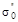 |
s0 |
начало |
конец |
|||||||||||||||
|
Время |
15-00 |
15-30 |
16-00 |
17-00 |
18-00 |
19-00 |
19-40 |
20-00 |
21-00 |
22-00 |
24-00 |
2-00 |
4-00 |
6-00 |
8-00 |
10-00 |
12-00 |
13-00 |
14-00 |
|
1 |
80 |
525 |
530 |
515 |
518 |
523 |
512 |
515 |
510 |
500 |
495 |
490 |
475 |
470 |
465 |
451 |
452 |
460 |
475 |
|
2 |
120 |
575 |
575 |
560 |
570 |
575 |
570 |
570 |
568 |
557 |
535 |
515 |
505 |
475 |
465 |
469 |
480 |
490 |
505 |
|
3 |
130 |
580 |
575 |
565 |
570 |
575 |
565 |
563 |
555 |
553 |
550 |
535 |
525 |
510 |
510 |
499 |
495 |
502 |
515 |
|
4 |
100 |
555 |
550 |
535 |
540 |
550 |
542 |
545 |
535 |
530 |
520 |
500 |
465 |
460 |
445 |
443 |
450 |
470 |
485 |
|
5 |
110 |
580 |
570 |
555 |
558 |
560 |
550 |
548 |
540 |
530 |
530 |
520 |
513 |
500 |
500 |
495 |
490 |
500 |
510 |
|
6 |
115 |
565 |
500 |
485 |
485 |
485 |
485 |
485 |
480 |
480 |
450 |
440 |
435 |
430 |
430 |
430 |
420 |
420 |
440 |
|
7 |
120 |
555 |
545 |
530 |
530 |
535 |
528 |
525 |
522 |
520 |
475 |
470 |
465 |
460 |
460 |
458 |
446 |
448 |
470 |
|
8 |
110 |
550 |
540 |
520 |
525 |
525 |
515 |
508 |
508 |
500 |
465 |
470 |
463 |
465 |
457 |
445 |
445 |
440 |
465 |
|
9 |
100 |
520 |
500 |
495 |
490 |
493 |
487 |
482 |
475 |
474 |
446 |
450 |
450 |
450 |
450 |
441 |
420 |
425 |
450 |
|
10 |
115 |
525 |
510 |
500 |
488 |
487 |
487 |
480 |
468 |
466 |
452 |
452 |
455 |
455 |
455 |
448 |
430 |
418 |
445 |
|
110 |
553 |
540 |
526 |
527 |
530 |
524 |
521 |
516 |
511 |
505 |
484 |
475 |
467 |
465 |
459 |
453 |
458 |
466 |
|
Примечание.
За эффективное напряжение в арматуре s0,
в соответствии с п. 8.4, принимается среднее значение
установившегося напряжения в арматуре, определенное за период с 10 до 13 ч и
равное 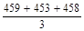
Ведомость на испытания предварительно напряженных свай сечением 45´50 см, длиной 22 м, армированных 10 стержнями Æ 28 мм, объект строительства - причал № 72 Ленинградского морского порта
|
№ сваи |
Дата изготовления |
Марка стали |
R0, МПа |
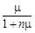 |
Es×10-4, МПа |
п |
Напряжения в арматуре, МПа |
sб.н, МПа |
Мт, кН×м |
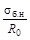 |
|
|
окончательное 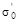 |
эффективное s0 |
||||||||||
|
1-2 |
13.02.79 |
35ГС |
23,9 |
0,0239 |
2,35 |
8,51 |
486 |
406 |
9,7 |
305 |
0,40 |
|
6-7 |
14.02.79 |
35ГС |
23,9 |
0,0239 |
2,35 |
8,51 |
486 |
406 |
9,7 |
305 |
0,40 |
|
14-15 |
16.02.79 |
35ГС |
24,8 |
0,0240 |
2,40 |
8,33 |
518 |
410 |
9,84 |
308 |
0,40 |
|
20-21 |
19.02.79 |
35ГС |
24,8 |
0,0240 |
2,40 |
8,33 |
518 |
410 |
9,84 |
308 |
0,40 |
|
29-30 |
22.02.79 |
35ГС |
23,9 |
0,0239 |
2,35 |
8,51 |
471 |
385 |
9,2 |
294 |
0,38 |
|
31-32 |
26.02.79 |
35ГС |
23,9 |
0,0239 |
3,35 |
8,51 |
471 |
385 |
9,2 |
294 |
0,38 |
|
38-39 |
28.02.79 |
35ГС |
21,7 |
0,0236 |
2,22 |
9,01 |
532 |
436 |
10,29 |
321 |
0,47 |
|
43-44 |
2.03.79 |
35ГС |
21,7 |
0,0236 |
2,22 |
9,01 |
532 |
436 |
10,29 |
321 |
0,47 |
|
49-50 |
9.03.79 |
35ГС |
23,9 |
0,0239 |
2,35 |
8,51 |
509 |
394 |
9,41 |
297 |
0,39 |
|
61-62 |
16.03.79 |
35ГС |
23,9 |
0,0239 |
2,35 |
8,51 |
509 |
394 |
9,41 |
297 |
0,39 |
|
72-73 |
22.03.79 |
35ГС |
26,2 |
0,0241 |
2,44 |
8,20 |
525 |
440 |
10,59 |
326 |
0,40 |
|
83-84 |
29.03.79 |
25Г2С |
21,7 |
0,0236 |
2,22 |
9,01 |
517 |
373 |
8,8 |
284 |
0,40 |
|
88-89 |
4.04.79 |
25Г2С |
32,4 |
0,0246 |
2,72 |
7,35 |
542 |
431,5 |
10,6 |
328 |
0,33 |
|
91-92 |
11.04.79 |
25Г2С |
28,0 |
0,0242 |
2,53 |
7,90 |
552 |
440,5 |
10,68 |
328 |
0,38 |
|
94-95 |
13.04.79 |
25Г2С |
23,0 |
0,0238 |
2,30 |
8,70 |
566 |
426 |
10,13 |
314 |
0,44 |
|
99-100 |
26.04.79 |
25Г2С |
27,0 |
0,0241 |
2,48 |
8,06 |
558 |
457 |
11,04 |
336 |
0,40 |
|
Среднее значение |
0,0239 |
518,2 |
414,4 |
9,92 |
310 |
0,40 |
|||||
Трест «Севзапморгидрострой»
ЗАВОД ЖЕЛЕЗОБЕТОННЫХ КОНСТРУКЦИЙ
192282, Ленинград, Турухтанный о-в, д. 1-а
ПАСПОРТ №
на железобетонный предварительно напряженный шпунт
сечением 45´50 см, длиной
20,6 м, изготовленный в цехе
с 13.02.81 г. по 23.04.81 г.
1. Количество в партии 100.
2. Партия № 4.
3. Проектная марка бетона на осевое сжатие М300.
4. Изделие армировано десятью стержнями согласно ТУ, сталь класса А-IIIв.
5. Объем уложенного в одно изделие бетона 4,2 м3.
6. Состав бетона 1 : 1,97 : 3,18.
7. Вид и активность цемента - портландцемент завода Пунане-Кунда.
8. Заполнители: песок (карьер) «Усть-Луга»; щебень (карьер) «Возрождение».
9. Водоцементное отношение 0,37.
10. Количество воды на 1 м3 бетона (в литрах) 168.
11. Осадка конуса (показатель удобоукладываемости) 2-3 см.
12. Проектная величина рабочего натяжения арматуры 540 МПа (5400 кгс/см2).
13. Передаточная прочность бетона не менее 70 % прочности проектной марки.
14. Средняя величина эффективного обжатия бетона 9,92 МПа, (99,2 кгс/см2), степень обжатия 0,4.
15. Моменты трещинообразования, кН×м:
нормируемый - 321 (32,1 тс×м);
фактический среднеарифметический в партии 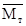
требуемый для данной партии , при партионном коэффициенте вариации 0,047, коэффициенте условий работы 0,961 и обеспеченности 0,95-254 (25,4 тс×м);
минимальное значение требуемого момента 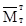
16. Прочность бетона к моменту отпуска изделий не менее 30 МПа (300 кгс/см2).
17. Морозостойкость бетона к моменту отпуска изделий 200.
18. Режим термовлажностного ухода за изделием - тепловая обработка с дождеванием.
Начальник ОТК.
Дата заполнения паспорта - 24.04.81 г.
Изделия, поименованные в паспорте, в количестве 100 шт. отпущены СУ-414 для объекта строительства причала № 72 Ленинградского морского порта.
Дата отгрузки - 29.04.81 г.
Зав. складом
Пример обработки данных испытаний предварительно напряженных железобетонных шпунтов сечением 50´45 см, армированных десятью стержнями диаметром 28 мм из стали класса А-IIIв
Исходные данные
1. Мт - момент, воспринимаемый сечением, нормальным к продольной оси элемента, при образовании трещин, величина которого указана в проекте, равен 225 кН×м (22,5 тс×м).
2. Нормируемый момент трещинообразования , определенный по формуле (3), при значениях t, v и тт, соответственно равных 1,64; 0,135 и 0,9, равен 321 кН×м (32,1 тс×м).
3. Статистические данные испытаний, необходимые для определения среднего значения момента трещинообразования и изменчивости, приведены в табл. 1, а коэффициента условий работы тт - в табл. 2.
Таблица 1
|
Мтi |
Мтi - 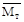 |
(Мтi - )2 |
№ пп |
Мтi |
Мтi - |
(Мтi - )2 |
|
|
1 |
328 |
8 |
64 |
22 |
331 |
11 |
121 |
|
2 |
330 |
10 |
100 |
23 |
314 |
-6 |
36 |
|
3 |
326 |
6 |
36 |
24 |
314 |
-6 |
36 |
|
4 |
334 |
14 |
196 |
25 |
320 |
0 |
0 |
|
5 |
325 |
5 |
25 |
26 |
320 |
0 |
0 |
|
6 |
298 |
-22 |
484 |
27 |
334 |
14 |
196 |
|
7 |
326 |
6 |
36 |
28 |
291 |
-29 |
841 |
|
8 |
285 |
-35 |
1225 |
29 |
327 |
7 |
49 |
|
9 |
314 |
-6 |
36 |
30 |
297 |
-23 |
529 |
|
10 |
325 |
5 |
25 |
31 |
297 |
-23 |
529 |
|
11 |
325 |
5 |
25 |
32 |
323 |
3 |
9 |
|
12 |
321 |
1 |
1 |
33 |
346 |
26 |
676 |
|
13 |
313 |
-7 |
49 |
34 |
329 |
9 |
81 |
|
14 |
313 |
-7 |
49 |
35 |
314 |
-6 |
36 |
|
15 |
343 |
23 |
529 |
36 |
300 |
-20 |
400 |
|
16 |
342 |
22 |
484 |
37 |
313 |
-7 |
49 |
|
17 |
336 |
16 |
256 |
38 |
336 |
16 |
256 |
|
18 |
320 |
0 |
0 |
39 |
311 |
-9 |
81 |
|
19 |
335 |
15 |
225 |
40 |
338 |
18 |
324 |
|
20 |
323 |
3 |
9 |
41 |
292 |
-28 |
784 |
|
21 |
326 |
6 |
36 |
42 |
339 |
19 |
361 |
|
13474 |
9284 |
Таблица 2
|
№ свай |
s(1-5)i, МПа |
s(6-10)i, МПа |
s(1-10)i, МПа |
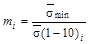 |
|
|
1 |
2 |
3 |
4 |
5 |
6 |
|
1 |
91 |
484 |
426 |
455 |
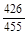 |
|
2 |
92-93 |
390 |
353 |
373 |
0,947 |
|
3 |
100-101 |
386 |
336 |
359 |
0,925 |
|
4 |
106-107 |
433 |
400 |
417 |
0,960 |
|
5 |
114-115 |
424 |
362 |
393 |
0,919 |
|
6 |
112-113 |
400 |
374 |
387 |
0,967 |
|
7 |
116-117 |
444 |
419 |
431,5 |
0,968 |
|
8 |
127-128 |
476 |
468 |
472 |
0,992 |
|
9 |
124-125 |
474 |
440 |
457 |
0,937 |
|
10 |
122-123 |
432 |
420 |
426 |
0,986 |
|
11 |
118-119 |
453 |
428 |
440,5 |
0,972 |
|
12 |
132-133 |
452 |
404 |
428 |
0,958 |
|
13 |
94-95 |
371 |
373 |
372 |
0,995 |
|
14 |
106-107 |
466 |
428 |
447 |
0,955 |
|
15 |
110-111 |
419 |
389 |
404 |
0,963 |
|
16 |
114-115 |
410 |
410 |
410 |
1,000 |
|
17 |
136-137 |
448 |
414 |
431 |
0,962 |
|
18 |
25-26 |
450 |
404 |
427 |
0,947 |
|
19 |
5-6 |
454 |
414 |
434 |
0,954 |
|
20 |
7-8 |
463 |
459 |
461 |
0,989 |
|
21 |
11-12 |
400 |
338 |
394 |
0,985 |
|
22 |
126-127 |
400 |
386 |
393 |
0,983 |
|
23 |
141-142 |
452 |
438 |
445 |
0,985 |
|
24 |
147-148 |
430 |
410 |
420 |
0,977 |
|
25 |
155-156 |
500 |
488 |
494 |
0,988 |
|
26 |
166-167 |
458 |
402 |
430 |
0,935 |
|
27 |
171-172 |
463 |
475 |
469 |
0,968 |
|
25,953 |
Оценка трещиностойкости изделий статистическим методом
1. По данным табл. 1 определяем среднее значение момента трещинообразования
= 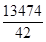
2. Коэффициент вариации v определяем по формуле (4 осн. текста), используя данные этой же таблицы
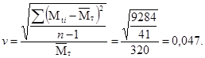
3. Коэффициент условий работы тт определяем по формуле (6 осн. текста), используя данные табл. 2.
В третьем и четвертом столбцах таблицы помещены средние значения эффективных напряжений в арматуре, расположенной у рабочих граней шпунтовых свай (номера стержней в группах 1-5, 6-10).
В пятом столбце таблицы помещены средние значения эффективных напряжений во всей рабочей арматуре, в шестом столбце - отношения средних минимальных напряжений к средним по всей напряженной арматуре:
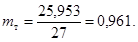
4. В соответствии с таблицей (справочное приложение 16), для числа изделий в партии, равного 100, изменчивости, равной 0,05, и заданной проектом точности, равной 3 %, получаем, что необходимое число испытаний равно 7, что значительно меньше числа испытаний, реализованных для оценки и тт.
5. В соответствии с формулой (3 осн. текста) определяем требуемое значение момента трещинообразования
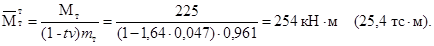
6. Производим сравнение требуемого среднего момента трещинообразования в процентах от нормируемого со значением, указанным в табл. 15 п. 8.27 для v, равном 0,05, и числе испытаний более 30
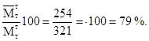
В связи с тем, что требуемое значение в процентах получилось меньше аналогичного значения, указанного в табл. 15 для v равного 0,06, то минимальное значение принимаем равным 81 % от нормируемого, т.е. 321 × 0,81 = 260 кН×м (26,0 тс×м).
7. Окончательную оценку пригодности изделий по трещиностойкости производим по результатам сравнения требуемого и среднего моментов трещинообразования
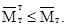
Так как неравенство удовлетворяется (260 кН×м < 320 кН×м), партия шпунта, подвергнутая статистическому контролю по трещиностойкости, считается выдержавшей испытания.
Справочное
|
N, шт. |
r, % |
Изменчивость v |
||||||||||
|
0,05 |
0,06 |
0,07 |
0,08 |
0,09 |
0,10 |
0,11 |
0,12 |
0,13 |
0,14 |
0,15 |
||
|
25 |
3 |
6 |
8 |
9 |
11 |
12 |
14 |
15 |
16 |
17 |
18 |
18 |
|
4 |
4 |
5 |
6 |
8 |
9 |
10 |
11 |
12 |
13 |
14 |
15 |
|
|
5 |
2 |
3 |
4 |
5 |
6 |
8 |
9 |
10 |
11 |
11 |
12 |
|
|
50 |
3 |
6 |
9 |
11 |
14 |
16 |
19 |
21 |
23 |
25 |
27 |
29 |
|
4 |
4 |
5 |
7 |
9 |
11 |
13 |
14 |
16 |
18 |
20 |
22 |
|
|
5 |
3 |
4 |
5 |
6 |
7 |
9 |
10 |
12 |
13 |
15 |
16 |
|
|
75 |
3 |
7 |
9 |
12 |
15 |
18 |
21 |
24 |
27 |
30 |
33 |
35 |
|
4 |
4 |
6 |
7 |
9 |
11 |
14 |
16 |
18 |
21 |
23 |
25 |
|
|
5 |
3 |
4 |
5 |
6 |
8 |
9 |
11 |
13 |
15 |
16 |
18 |
|
|
100 |
3 |
7 |
10 |
13 |
16 |
19 |
23 |
27 |
30 |
34 |
37 |
40 |
|
4 |
4 |
6 |
8 |
10 |
12 |
14 |
17 |
19 |
22 |
25 |
27 |
|
|
5 |
3 |
4 |
5 |
6 |
8 |
10 |
12 |
13 |
15 |
17 |
19 |
|
Рекомендуемое
1. Бетонирование конструкций при среднесуточной температуре наружного воздуха ниже 5 °С и минимальной ниже 0 °С следует производить с оптимальной теплоизоляцией, обеспечивающей требуемую прочность бетона и вместе с тем повышающей трещиностойкость конструкции. Термическое сопротивление R оптимальной теплоизоляции следует определять по формуле:
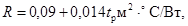
где tp - расчетная температура наружного воздуха в период бетонирования, °С (без учета знака минус).
Формула составлена для бетона, укладываемого с
температурой tб выше 15 °С. При укладке бетона с температурой ниже 15 °С величина R соответственно
умножается на отношение 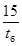
2. Для обеспечения отсутствия температурных трещин в поверхностных слоях конструкции скорость остывания бетона по окончании изотермического паропрогрева w не должна превышать допустимой величины
где Dt - разница температур паровоздушной среды в период изотермического паропрогрева и в конце ее охлаждения, °С; - 0,15 мм/м - допускаемое удлинение бетона в конце охлаждения бетона. Величина может быть увеличена на основе испытания образцов бетона, аналогичных бетону данной конструкции; т - коэффициент, учитывающий наличие (т = 1,2) или отсутствие (т = 1) искусственного увлажнения конструкции в период твердения бетона; b - коэффициент, учитывающий геометрическую форму конструкции. Для конструкций с ребрами (параллелепипед, стена, тавр, двутавр и др.) b = 5 и без ребер (цилиндр, оболочка и др.) b = 15. Мп - модуль поверхности конструкции (отношение площади поверхности к объему), м-1; пг - коэффициент горизонтальной симметричности конструкции, равный отношению модулей поверхности частей конструкции, расположенных слева и справа от вертикальной оси симметрии; nв - коэффициент вертикальной симметричности конструкции, равный отношению модулей поверхности: для таврового сечения горизонтальной плиты с вутами и стенки, для двутаврового сечения - верхнего и нижнего поясов с вутами.
При вычислении nг и пв из двух модулей берется отношение меньшого по значению к большему. Площадь сечения конструкции по оси симметрии не учитывается.
3. При условии предъявления специальных требований к конструкции по трещиностойкости их распалубливание необходимо производить с соблюдением следующих требований:
а) для конструкции с модулем поверхности Мп менее 2:
должен прекратиться рост температуры бетона в центре конструкции от экзотермического разогрева;
перепад температур между центром конструкции и средней температурой наружного воздуха (в ближайшие 10 дней после распалубки) не более 32 °С при оптимальной теплоизоляции (см. п. 1) и 27 °С при теплоизоляции большей оптимальной;
б) с модулем поверхности Мп более 2:
распалубка допускается при разности температур поверхности и воздуха, не превышающей допустимой величины Dtдоп, определяемой по формулам:
для конструкций с раскрытыми охлаждаемыми поверхностями:
где - допускаемая деформация растяжения бетона к моменту распалубки, мм/м, принимаемая по опытным данным, полученным для бетона, изготовленного из тех же материалов, того же состава и теми же методами, что и бетон конструкции. При отсутствии опытных данных величина принимается равной для тяжелого бетона = 0,11 мм/м, а для керамзитобетона = 0,15 мм/м; - коэффициент, учитывающий геометрическую форму конструкций. Для конструкций с ребрами (параллелепипед, тавр и другие) = 132 и без ребер (цилиндр, оболочка и другие) = 380; Vmax - максимальная по прогнозу метеостанций скорость ветра, м/с; Мп - модуль поверхности, м-1;
для конструкций с поверхностями, защищенными съемной теплоизоляцией, с термическим сопротивлением R
Обязательное
1. Организации контрольных измерений должно предшествовать тщательное изучение актов приемки массивов для обеспечения должного учета при кладке фактических отклонений массивов от проектных размеров.
2. При организации контрольных измерений и выбора инструментов и приспособлений для выполнения их следует учитывать указания п. 5 настоящего приложения.
3. Наблюдение за качеством и деформациями массивовой кладки имеет целью проверить выполнение требований настоящего раздела правил и проекта. Наблюдения за деформациями ведутся строительной организацией до времени сдачи сооружения в эксплуатацию.
4. По ходу строительства следует фиксировать высотное и плановое положение каждого уложенного в сооружение массива и ширину швов между массивами. Соответствующие контрольные измерения выполняются после укладки каждого массива.
Примечание. Измерения для определения отметок и уклонов верхней грани массивов допускается выполнять после выкладки каждого курса секции стенки.
Во всех случаях, когда точность измерений зависит от водолазов, обязателен систематический контроль их работы техническим персоналом, обученным водолазному делу.
6. Точки, в которых производятся измерения, необходимые для оценки качества кладки и определения ее деформаций, в тех случаях, когда они не закрепляются специальными марками (см. п. 23 настоящего приложения), следует отмечать на поверхности массива несмываемой краской и одновременно давать их описание. Например, «Оба угла на верхней горизонтальной плоскости массива № с морской стороны».
7. Качество кладки контролируется оценкой точности положения массивов в пределах допусков, установленных по п. 10.61, а также проверкой соблюдения требований выдерживания по курсам и законченной кладки под огрузкой или без нее в соответствии с указаниями проекта сооружения.
8. Методика измерений должна учитывать особенности, имеющие место для подводной кладки в процессе ее выполнения, когда отсутствуют стационарные надводные площадки, могущие служить базой для установки измерительной аппаратуры, и для кладки, уже выведенной в надводную зону.
9. Контроль планового положения массивов первого курса выполняет водолаз промерами от обоих вертикальных ребер каждого массива с морской стороны до боевой линии, разбитой и закрепленной в соответствии с требованиями разд. 10 настоящих Правил, ч. II, а также измерением ширины швов в соответствии с указаниями п. 12 и ступеней в плане между прилежащими массивами, руководствуясь п. 11 настоящего приложения.
10. Контроль планового положения массивов всех курсов, следующих за первым, выполняется измерением ступеней в поперечном сечении между массивами, укладываемого курса и предшествующего ему и ступеней в продольном направлении, руководствуясь указаниями п. 11, а также вертикальных швов согласно п. 12 настоящего приложения.
11. Ступени измеряют водолазы линейкой или угольником с морской стороны кладки:
а) в поперечном сечении по обеим вершинам последнего уложенного массива;
б) в продольном направлении по одной точке - нижней вершине последнего уложенного массива.
Примечание. Нивелирование рекомендуется исполнять с применением жестких штанг с нивелирными рейками, оборудованными уровнями, с перемещением и постановкой штанг при помощи специальных тележек, перемещаемых на понтоне по рельсам и оборудованных выносными консолями и лебедками или с помощью подводных нивелиров ЦНИИС.
15. Плановое положение массивов верхнего курса кладки контролируется засечками теодолитом с берегового базиса по вешкам, устанавливаемым по обоим углам верхней грани массивов с морской стороны последних.
В тех случаях, когда результаты нивелировок верхнего курса, выполненные согласно п. 18, покажут неожиданные значительные деформации кладки в процессе ее выдерживания, контрольные измерения планового положения массивов верхнего курса рекомендуется выполнять и в процессе выдерживания.
Примечания: 1. Измерения, указанные в настоящем пункте, во всех случаях обязательны для массивов первого и верхнего курсов. Для массивов остальных курсов эти измерения обязательны лишь в тех случаях, когда величина измеряемого расстояния (под водой) не превышает 0,8 м.
2. Плановое положение отвеса фиксируется путем геодезической привязки к закрепленному на берегу базису.
3. Уклон стенки следует проверять помимо сроков, указанных в настоящем пункте, также не ранее чем через сутки после отсыпки разгрузочной призмы и перед предъявлением к сдаче законченной стенки.
17. Фактический уклон стенки определяется по относительному положению горизонтальных параллельных кордону ребер верхнего и первого курсов массивов, определенному с учетом фактических отклонений кладки от проектного положения по ступеням (см. пп. 10 и 16).
При определении уклона данным методом следует исходить из того, что горизонтальное расстояние между указанными ребрами при вертикальном положении стенки представлено в проекте стенки, а приращение этой величины для различных уклонов легко определяется элементарным расчетом. Так, при горизонтальном расстоянии между верхним и нижним ребрами у вертикальной стенки, равным 0,4 м, и возвышением верхнего ребра над нижним - 8 м при точно выполненной кладке для уклона 1 % горизонтальное расстояние равно 0,4 + 8×0,01 = 0,48 м, для 2 % - 0,4 + 8×0,02 = 0,56 м и т.д.
Примечание. Этот срок может быть увеличен до трех суток в том случае, если последовательно проведенными нивелировками будет установлен замедленный темп деформаций, исключающий целесообразность ежедневных нивелировок, а в основании залегают грунты, в которых не могут иметь места деформации, существенно нарушающие закономерности, установленные при первоначальных нивелировках.
19. После отсыпки разгрузочной призмы в период засыпки грунта за стенку до начала работ по возведению надстройки нивелировка верхней поверхности кладки ограничивается тремя створами на секцию (по две точки с морской и береговой стороны массива на створ) и выполняется через каждые 5-10 суток.
Створы для нивелировки рекомендуется совмещать с поперечниками, указанными в п. 16.
20. После завершения огрузки основания незасыпанной стенкой следует выполнить контрольное измерение ширины швов, руководствуясь указаниями п. 12.
21. Идентичные размеры, получаемые различными контрольными измерениями согласно настоящей инструкции, следует сопоставлять и при выявлении противоречий выполнять дополнительные контрольные измерения.
Уклон кладки, определенный в соответствии с расстоянием между ребрами нижнего и верхнего курса массивов (п. 17), следует сопоставлять с уклоном, полученным при измерениях от отвеса (п. 16), и уклоном, выявленным при нивелировке верхнего курса кладки (п. 14).
Величину перекрытая швов, получаемую непосредственными измерениями (п. 13), следует сопоставлять с той же величиной, определенной на основе контроля планового положения массивов (пп. 9 и 10) и толщины швов (п. 12).
Ступени между соседними массивами одного и того же курса, определяемые водолазными замерами (п. 10), следует сопоставлять с теми же величинами, получаемыми нивелировкой (п. 14).
Ступени в поперечном сечении стенки, получаемые непосредственным измерением (п. 10), сопоставляются с определенными измерениями от отвеса (п. 16).
22. Контрольные измерения, которые не представляется возможным провести различными способами, необходимо проводить повторно. В случае расхождения данных первых и вторых замеров следует их повторять, до получения удовлетворительных результатов.
Особое внимание при этом (необходимо обращать на измерения, относящиеся к первому курсу кладки, к которому привязываются последующие курсы (см. п. 9).
Рекомендуемое
1. Упругоподатливые стыковые соединения сборных железобетонных плит в оболочках должны покрываться гидроизоляционным составом в целях предохранения от коррозии металлических деталей стыка.
Составы гидроизоляционных покрытий для морских и обращенных к берегу стыков, для их наружных и внутренних поверхностей определяются проектом (имея в виду разные условия их работы в сооружении).
Зона стыка, со стороны моря находящаяся в переменном уровне и наиболее подверженная коррозии, после гидроизоляционного покрытия должна бетонироваться с наружной стороны заподлицо с поверхностью сборных плит в пределах от обреза оболочки до уровня на 25-30 см ниже минимального расчетного уровня воды.
2. Нанесение гидроизоляционного покрытия и бетонирования фартуков, прикрывающих морские стыки в зоне переменного уровня, должны производиться на полигоне, где монтируется сборная оболочка, и могут начинаться сразу после сварки металлических закладных деталей стыковых соединений.
3. Перед нанесением гидроизоляционного покрытия металлические детали стыков должны быть тщательно очищены от ржавчины, грязи, масляных пятен и т.п. Очищать металлические поверхности рекомендуется механическим способом, применяя машинки, употребляющиеся для очистки корпусов судов при судоремонте, пескоструйные аппараты. Очищать металлические поверхности следует до блеска.
4. Гидроизоляционные составы для покрытий стыковых соединений в оболочках должны приготавливаться в соответствии с требованиями технологии каждого состава с учетом соблюдения точной дозировки составляющих, объема приготовляемого состава, который может быть израсходован до начала его твердения или потери им необходимых свойств, способов перемешивания составляющих, температурных условий в помещении для приготовления составов, условия техники безопасности и охраны труда (вентиляция помещения, спецодежда, защитные приспособления: очки, противогазы, перчатки, обувь и др.).
5. Приготовлять составы для гидроизоляционных покрытий следует, как правило, на полигоне, где монтируются оболочки из сборных плит.
6. Транспортировать составы для гидроизоляции, имея в виду короткие расстояния и небольшие объемы материалов, следует на легких ручных тележках в небольших закрытых емкостях, а поднимать на подмости - с помощью блоков.
7. Наносить гидроизоляционные составы можно пистолетами-распылителями или вручную с помощью обычных кистей.
Рабочие, занятые нанесением гидроизоляционных составов, должны иметь защитные очки, рукавицы и соответствующие одежду и обувь.
8. В составе проекта производства работ по строительству причальных сооружений на сборных железобетонных цилиндрических оболочках большого диаметра с вертикальным членением должен быть раздел по гидроизоляции, в котором изложены вопросы приготовления, транспортирования и нанесения гидроизоляционных составов на стыки между сборными плитами, подготовка поверхностей стыков и техника безопасности при выполнении этих работ.
9. Контроль качества гидроизоляционных покрытий осуществляется визуальным путем.
В покрытиях не допускаются трещины, пустоты, пропуски, вздутия, слабые незатвердевшие участки, отколы и т.п. дефекты. Обнаруженные дефекты подлежат исправлению.
При проверке качества рассматриваются документы, характеризующие составляющие компоненты в части соблюдения сроков их годности, а также соответствия условий хранения, способов приготовления, температур и других специальных требований, зависящих от свойств принятых в проекте материалов.
В паспорте на изготовленную оболочку должно указываться качество гидроизоляционных покрытий стыков.
Обязательное
1. Траверса устанавливается на верхний обрез оболочки в проектное положение по рискам, нанесенным на двух диаметрально противоположных плитах оболочки.
2. Нижние захваты-щечки подвесок траверсы стропятся к соответствующим каждой подвеске подъемным петлям, выступающим над верхним обрезом оболочки.
3. Подвески устанавливаются в строго вертикальное положение над соответствующими им подъемными петлями; опорные колодки подвесок должны быть при этом перпендикулярны осям парных двутавров.
4. Винтовыми регуляторами все подвески натягивают примерно с одинаковой силой вручную.
5. Каждый плавкран стропится к своей концевой опоре траверсы с помощью троса с «гашами» на концах; «гаши» заводятся в анкерные колодки концевых опор траверсы, а середина троса свободно охватывает гак плавкрана; оба троса с «гашами» на концах должны быть одинаковой длины; «гаши» кранов должны занять положение на вертикалях, проходящих через центры кольцевых опор траверсы; гаки обоих плавкранов соединяются тросом, длина которого в натянутом состоянии должна быть равна диаметру оболочки.
6. Перед подъемом оболочки производится «набивка» тросов, при этом усилия на гаках не должны превышать 200 кН.
7. После «набивки» тросов производится «обкатка» траверсы двумя ступенями нагрузки; при подъеме оболочки высотой 6,7 м первая ступень нагрузки составляет 40 т на каждый плавкран, а вторая-50 т; при подъеме оболочек высотой 8,3 и 10,4 м величина ступеней нагрузки должна быть соответственно увеличена; величину нагрузки на гаках кранов допускается определять по показаниям амперметров. На обеих ступенях нагрузка должна выдерживаться не менее 10 мин; затем нагрузка сбрасывается до нуля, после чего производится повторное регулирование усилий в подвесках траверсы, т.е. они вновь вручную натягиваются примерно с одинаковой силой.
8. Оболочка поднимается вновь, т.е. производится «набивка» тросов и новая «обкатка» траверсы двумя ступенями нагрузки. На второй ступени нагрузка поддерживается в течение времени, необходимого для окончательной проверки состояния готовности всех участвующих в операции механизмов и оборудования.
9. При подъеме, опускании и особенно операциях, связанных с изменением положения оболочки относительно кранов, когда оболочка подвешена на траверсе, необходимо строго следить за тем, чтобы верхний и нижний обрезы оболочки были горизонтальными.
10. Оболочка транспортируется к месту установки и на 75 % своей высоты погружается в воду. В этом состоянии производится точная наводка оболочки в проектное положение в плане, после чего она устанавливается на каменную постель.
11. Порядок спаривания плавкранов, следования каравана из двух плавкранов с оболочкой по акватории, его буксирования, страховки, раскрепления и анкеровки для обеспечения точной наводки оболочки в плане определяются проектом производства работ.
Рекомендуемое
Выбор вибропогружателей и вибромолотов для погружения и извлечения шпунтин рекомендуется производить в зависимости от массы шпунтины и глубины ее погружения по данным таблицы.
|
Масса шпунтины, т |
Глубина погружения, м |
Грунты |
Рекомендуемая марка вибромашин |
|
|
при погружении |
при извлечении |
|||
|
До 1,5 |
До 12 |
Легкие |
ВПП-2А С-467М |
ВПП-2А |
|
Средние |
С-467М ВМС-1 |
ВПП-2А |
||
|
Тяжелые |
С-467М ВМС-1 ВМС-2 |
ВПП-2А МШ-2 |
||
|
1,5-2 |
12-20 |
Легкие |
С-467М ВМС-1 ВМС-2 |
ВПП-2А МШ-2 |
|
Средние |
С-467М ВМС-2 |
МШ-2 |
||
|
Тяжелые |
ВМС-2 |
МШ-2 |
||
Рекомендуемое
Гидродинамическое воздействие потока, наблюдающееся при опускании покрытия под воду, определяется усилием, воспринимаемым самим покрытием, а также нагрузкой, передаваемой на средства укладки, отнесенными к геометрическому центру барабана.
Гидродинамические усилия (силы, нагрузки) определяют по формуле
где С - эмпирический коэффициент; w - площадь обтекаемого тела, м2; g - плотность воды, т/м3; vср - средняя по вертикали скорость потока, м/с.
Гидродинамическая нагрузка на средства укладки и момент ее М учитываются через их составляющие соответственно Рх, Ру, Pz и Муx, Mzx, Мхz, при этом координатная ось x принимается направленной вдоль гидродинамической оси потока, ось у - от берега в сторону реки и z - по вертикали вниз.
Для определения значений указанных составляющих требуются следующие гидрометрические и гидрологические данные:
а) глубины в реке по створу H (М);
б) угол между гидродинамической осью потока и продольной осью барабана при укладке покрытия a.
Угол a считается положительным, если продольная ось барабана повернута относительно гидродинамической оси потока против часовой стрелки, и отрицательным, если поворот происходит по часовой стрелке;
в) максимальное расстояние по вертикали от низа барабана до откоса берега в период укладки покрытия под воду t, м.
При определении составляющих силы Р значение входящих в приведенную выше формулу величин принимаются: для PxCx = 0,5 (не зависит от угла a); wx - площадь проекции на координатную плоскость уz при соответствующем угле ±a; для РуСу - определяется по графику (рис. 1); wv - площадь проекции на координатную плоскость х для положения барабана при a = 0 °; для PzCz - определяется по графику (рис. 2); wz - сумма площадей полных проекций барабана и покрытия на координатную плоскость ху для положения барабана при a = 0 °.
При определении усилия в покрытии Pп следует принимать: С = 0,055 (не зависит от угла a); wz - то же, что при определении Рz.
Во всех случаях средняя скорость принимается направленной по оси х, т.е. vcp = vx. Для определения составляющих момента М принимается:
Мух = Руxeху,
где eху = - (0,1-0,3) l - эксцентриситет точки приложения Ру относительно геометрического центра барабана (М); l - длина барабана.
Мzх = Рeхz,
где eхz = (0,8-1,0) l - эксцентриситет точки приложения относительно геометрического центра барабана.
Составляющие Ру, Рz, Мxz и Мxy определяют натяжение в несущих барабан канатах, Myz - усилия, приходящиеся на механические устройства, предотвращающие произвольное вращение барабана, Рх - лобовая нагрузка при использовании продольного каната, определяет его сечение и закрепление. Расчет производится в нескольких характерных точках на створе с учетом конкретных местных значений a, vср и t. Элементы оборудования назначаются с учетом максимальных значений подсчитанных усилий и моментов.
Рис. 1. График определения Ру Су
Рис. 2. График определения Pz Сz
Справочное
Расчеты экономической эффективности применения вахтового режима организации строительно-монтажных работ выполняются в соответствии с «Инструкцией по определению экономической эффективности использования в строительстве новой техники, изобретений и рационализаторских предложений» СН 509-78 и «Инструкцией по определению экономической эффективности капитальных вложений в строительство» СН 423-71.
Общая народнохозяйственная экономическая эффективность применения вахтового метода производства строительно-монтажных работ может быть определена по формуле
Эн = Эи.с + Эс.с.с + Зтр.
где Эи.с - экономический эффект от сокращения затрат на создание и содержание социальной инфраструктуры, тыс. руб.; Эс.с.с - экономический эффект от сокращения сроков строительства, тыс. руб.; Зтр - затраты на приобретение и эксплуатацию транспортных средств для перевозки рабочих, тыс. руб.
Экономический эффект от сокращения затрат на создание и содержание социальной инфраструктуры определяют как разность приведенных затрат по базовому и предполагаемому варианту производства работ по формуле
Эи.с = [(С1 - С2) + Ен (К2 - К1)] Т2,
где C1 и C2 - текущие затраты на содержание социальной инфраструктуры по базовому и предлагаемому вариантам, тыс. руб.; К1 и К2 - капитальные затраты на создание социальной инфраструктуры, тыс. руб.; Т2 - время строительства объекта по предлагаемому варианту, год; Ен - нормативный коэффициент эффективности капитальных вложений.
Экономический эффект от сокращения сроков строительства определяют по формуле
Эс.с.с = Эс.и.с + Эс.ц.о,
где Эс.и.с - экономический эффект за счет сокращения сроков строительства объектов жилищно-бытового комплекса, тыс. руб.; Эс.ц.о - экономический эффект за счет сокращения сроков строительства целевого объекта, тыс. руб.
Эффект за счет сокращения сроков строительства объектов жилищно-бытового комплекса определяют как эффект от досрочного ввода объекта в эксплуатацию
,
где Ф - стоимость основных фондов, досрочно вводимых в эксплуатацию, тыс. руб.; - срок строительства объектов жилищно-бытового комплекса по вариантам, год.
Экономический эффект за счет сокращения сроков строительства целевого объекта
Эс.ц.о = Эв + Эу + Эд.о,
где Эв - эффект от досрочного ввода целевого объекта в эксплуатацию, тыс. руб.; Эу - эффект от снижения условно-постоянных расходов, тыс. руб.; Эд.о - эффект от выполнения дополнительных объемов работ в связи со снижением потерь рабочего времени и снижением транспортной усталости рабочих при их перевозке от места жительства до строящегося объекта и обратно.
Эффект от досрочного ввода в эксплуатацию целевого объекта
Эв = ЕнФ (Т1 - Т2),
где Т1 и Т2 - срок строительства целевого объекта, год.
Эффект от снижения условно-постоянных расходов
Эу = Н (1-Т2/Т1),
где Н - условно-постоянные расходы по варианту с продолжительностью строительства Т1, тыс. руб.
Условно-постоянные расходы могут в соответствии с СН 509-78 при усредненных расчетах приниматься в процентах от общей величины затрат по соответствующим статьям: затраты на материалы - 1; затраты на эксплуатацию машин и механизмов - 15; накладные расходы - 50.
Экономическую эффективность от выполнения дополнительных объемов работ определяют по формуле
Эд.о = 0,0566 А,
где А - дополнительно выполненный объем СМР, тыс. руб.; 0,0566 - коэффициент, учитывающий норму плановых накоплений.
Дополнительно выполненный объем строительно-монтажных работ
А = Ав + Ар.в,
где Ав - дополнительный объем работ, полученный за счет повышения производительности труда при исключении транспортной усталости работников, тыс. руб.; Ар.в - дополнительный объем работ, полученный при сокращении внутрисменных потерь рабочего времени при исключении ежедневной усталости рабочих.
где - среднедневная выработка одного рабочего по базовому варианту руб./дн.; Кт - коэффициент роста производительности труда рабочих при снятии транспортной усталости; Чр - среднесписочная численность рабочих; Т2 - срок строительства объекта по предлагаемому варианту, дни.
Дополнительный объем работ, выполненный за счет сокращения потерь рабочего времени рабочих при ликвидации ежедневных перевозок, определяют по формуле
где t - потери рабочего времени при однократной перевозке рабочих, ч; - среднечасовая выработка одного рабочего в базовом варианте; Q - число перевозок за время строительства объектов.
Общая хозрасчетная экономическая эффективность
Эx.p = Эоб + Эс.ц.о + Зтр.
где Эоб - экономический эффект за счет снижения затрат на обустройство работников, тыс. руб. Определяется по разности приведенных затрат на создание и содержание жилищно-бытового комплекса.
При определении экономического эффекта от сокращения сроков строительства целевого объекта эффект от досрочного ввода в эксплуатацию может определяться с коэффициентом 0,5, учитывающим сумму отчисления от прибыли заказчика. Остальные показатели могут определяться по формулам, приведенным выше.
Справочное
|
Наименование машины |
Модель, тип, марка, ГОСТ |
Назначение и область применения |
Технические характеристики |
Оптовая цена, руб., по прейскуранту |
Предприятие-изготовитель |
|
Экскаватор полноповоротный канатный на гусеничном ходу с ковшом вместимостью, м3: |
|||||
|
1 |
ЭО-5ШБХЛ ГОСТ 17343-83 |
Для грунтов I-IV категорий с включениями размером не более 400 мм |
Мощность двигателя 79,5 кВт, скорость передвижения 2 км/ч. Наибольший радиус копания прямой лопатой 9,2 м. Наибольшая глубина копания обратной лопатой 6,7 м. Масса 33,5 т. Удельное давление на грунт 0,087 МПа |
23000 № 22-01-1981/33 |
Костромской завод «Рабочий металлист» |
|
1,6 |
ЭО-5122АХЛ ГОСТ 22894-66, 14892-69 |
То же |
Мощность двигателя 125 кВт, скорость передвижения 2,4 км/ч. Наибольший радиус копания 8,9 м. Наибольшая глубина копания 6,2 м. Масса 35,8 т, удельное давление на грунт 0,083 МПа |
38500 № 22-01-1981/77 |
Воронежский экскаваторный завод им. Коминтерна |
|
Экскаватор полноповоротный гидравлический на гусеничном ходу с ковшом вместимостью 1,6 м3 |
ЭО-5123ХЛ ГОСТ 22894-77 |
Для грунтов I-IV категорий с включениями размером не более 400 м |
Мощность двигателя 110 кВт. Скорость передвижения 2,2 км/ч. Наибольший радиус копания 8,9 м, наибольшая глубина 6,2 м. Масса 38,9 т, удельное давление на грунт 0,083 МПа |
42000 № 22-01-1981/77 |
Воронежский экскаваторный завод им. Коминтерна |
|
Экскаватор полноповоротный, канатный с ковшом 2,5 м3 |
Э-2505БХЛ ГОСТ 17343-83 |
То же, при температуре от +40 до - 60 °С |
Мощность двигателя 160 кВт. Скорость передвижения 1,23 км/ч. Наибольший радиус копания 12 м. Масса 94 т, удельное давление на грунт 0,115 МПа |
53000 № 22-01-1981/23 |
То же |
|
Кран пневмоколесный грузоподъемн. 27 т с дизель-электрическим приводом |
КС-5363АХЛ |
Для строймонтажных работ |
Мощность двигателя 88 кВт. Длина стрелы 20, 25, 30 м. Масса 38 т, скорость передвижения 18 км/ч |
- |
|
|
Бульдозер-рыхлитель на гусеничном тракторе ДЗТ-250М. Навесное оборудование ДЗ-124ХЛ и ДП-29АХЛ |
ДЗ-129АХЛ ГОСТ 7410-79 ДЗ-141ХЛ ГОСТ 7410-79 |
Для послойного рыхления прочных грунтов в условиях температур воздуха до - 60 °С |
Отвал: длина 4360 мм, высота 1880 мм, угол резания 55, глубина рыхления 1400 мм. Масса бульдозера 8,046 т, рыхлителя 6,59 т, удельное давление на грунт 0,058 МПа |
28000 |
Балаковский завод самоходных землеройных машин |
|
Машина послойного фрезерования на гусеничном тракторе Т-130. П-1 с бульдозерным оборудованием |
ДП-31АХЛ |
Для разработки мерзлых грунтов температурой до - 10 °С |
Глубина рыхления 300 мм, ширина захвата 2400 мм, масса 23,9 т, удельное давление на грунт 0,058 МПа |
31180 № 22-01-1981/15 |
Коростенский завод дорожных машин |
|
Машина для бурения скважин на базе трактора МТЗ-50 |
Ямбург 5БМ-204 |
- |
Диаметр скважины 400 мм, глубина бурения до 1 м |
- |
Трест Мосзеленстрой Главмосинжстроя |
|
Снегоболотоход гусеничный |
НАМИ-0157М |
Для транспортировки грузов по незащищенному мохорастительному слою |
Грузоподъемность 8 т, удельное давление на грунт 0,0213 МПа |
- |
- |
|
Гусеничный болотоход |
«Тюмень» |
То же |
Грузоподъемность 36 т, удельное давление на грунт 0,03 МПа |
- |
- |
ТЕХНИЧЕСКИЕ ДАННЫЕ СТРОИТЕЛЬНЫХ МАШИН И МЕХАНИЗМОВ ИНОСТРАННЫХ ФИРМ, ИСПОЛЬЗУЕМЫХ ПРИ РАБОТАХ В УСЛОВИЯХ НИЗКИХ ТЕМПЕРАТУР АРКТИКИ И КРАЙНЕГО СЕВЕРА
|
Наименование машины, механизма |
Тип, марка |
Тип ходовой части |
Технические характеристики |
Фирма изготовитель |
|
Бульдозер |
Д 155 А-1 |
Гусеничный |
Мощность двигателя 320 л. с., вес 33,46 т |
«КОМАЦУ» (Япония) |
|
Д80 А-18 |
» |
Мощность двигателя 220 л. с., вес 23,0 т |
То же |
|
|
Гигантский рыхлитель |
ДРД 355-2А |
» |
Мощность двигателя 410 л. с., вес 45,31 т, удельное давление на грунт 0,13 МПа |
» |
|
Экскаватор |
НД-1500 |
Гусеничный |
Емкость ковша 2,5 м3, вес 42,7 т, производительность 200 м3/ч, высота копания 9,7 м, мощность двигателя 200 л. с. Двигатель МИЦУБИСИ 8ДС81С, расход топлива 30 л/ч, удельное давление на грунт 0,095 МПа |
«КАТО» (Япония) |
|
Н-181 |
» |
Емкость ковша 2,5 м3, вес 42,5 т, производительность 250 м3/ч, высота копания 9,47 м, мощность двигателя 250 л. с., двигатель ИСУДЗУ 661 Т, расход топлива 23,3 л/ч, удельное давление на грунт 0,095 МПа |
«ХИТАЧИ» (Япония) |
|
|
Автомобильный кран повышенной проходимости |
TR-151 |
Колесный |
Максимальная грузоподъемность 16 т, максимальная длина стрелы + гуська 17,0 + 6,0 м |
«ТАДАНО» (Япония) |
|
TR-250 |
» |
Максимальная грузоподъемность 25 т, максимальная длина стрелы + гуська 26,0+7,0 м |
То же |
|
|
Вибропогружатель |
УМ 2-4000 ЕП |
Мощность двигателя 60 кВт, возмущающая сила 41 - 49 т, частота колебаний в мин - 1100, амплитуда колебаний в мм 7,5-8,9, масса 4,9 т |
«КЭНСЭЦУ КИКАЙ ТЕСА» (Япония) |
|
|
Буровой станок |
PF 1200-YSIII |
Гусеничный |
Вес 52 т, диаметр бурения в м 1,0; 1,2, глубина бурения 24 м. Двигатель CUMMINS NRTO-6 мощность 270 л. с. |
«КАТО» (Япония) |
Справочное
|
Наименование машины, механизма |
Масса, т |
Тип, марка |
Габариты, м |
Грузоподъемность, т |
Мощность, кВт |
Тип энергопривода |
Тип ходовой части (колесный гусеничный) |
Прочие технические характеристики |
||
|
длина |
ширина |
высота |
||||||||
|
Гусеничный кран |
15,8 |
РДК-25-1 |
3,2 |
3,2 |
6,2 |
25 |
100 |
Дизель А-01-МЕ Генератор ДАК-1-75-4 |
Гусеничный |
|
|
27 |
РДК-160 |
5,9 |
3,2 |
3,3 |
16 |
46 |
То же |
|||
|
Автомобильный кран |
21,5 |
КС-45-61 |
14,0 |
3,9 |
2,7 |
16 |
215 30 |
Дизель ЯМЗ-238 Генератор ЕС-82-4с |
Колесный » |
Базовый автомобиль КрАЗ-257 |
|
14,3 |
КС-3562А |
13,2 |
2,8 |
3,8 |
10 |
180 |
Дизель ЯМЗ-236 |
» |
Базовая машина МАЗ-500А |
|
|
Пневмоколесный кран |
15 |
КС-5363 |
20,3 |
3,3 |
3,9 |
25 |
- |
Дизель ЯМЗ-204А |
» |
|
|
Трактор |
11 |
К-700 |
7,4 |
2,5 |
- |
5 |
215 |
Дизель ЯМЗ-238 Генератор Г-270 |
» |
|
|
Бульдозер |
14 |
Д-492А |
5,5 |
3,9 |
3,0 |
10 |
108 |
Д-108 |
Гусеничный |
Базовый трактор Т-100М |
|
6,9 |
Д-606 |
4,9 |
2,5 |
2,5 |
3 |
75 |
СМД-14А |
То же |
Базовый трактор ДТ-75С2 |
|
|
13,7 |
Д-27 |
5,1 |
3,2 |
3,0 |
10 |
160 |
Д-160 |
» |
Базовый трактор Т-130 |
|
|
Дизель-молот |
5,8 |
С-996 |
0,7 |
0,5 |
4,4 |
- |
- |
- |
» |
Использовали экскаватор Э-1251 с копровой мачтой |
|
Буровая установка |
21,5 |
БТС-150 |
6,0 |
3,2 |
3,6 |
- |
160 |
Д-160 |
» |
Базовый трактор Т-130 |
|
Экскаватор |
40,9 |
Э-1252Б |
5,6 |
3,5 |
4,2 |
20 |
- |
АМ-03 |
» |
|
|
21,2 |
Э-652 |
4,8 |
2,8 |
3,5 |
10 |
108 |
Д-108 |
» |
||
|
Автотягач |
4,3 |
ЗИЛ-130В1 |
6,6 |
2,5 |
4,4 |
5 |
150 |
ЗИЛ-130 |
Колесный |
|
|
0,016 |
ИВ-67 |
0,4 |
0,2 |
0,2 |
- |
0,8 |
Электродвигатель |
- |
Вынужденная сила 3000 Н |
|
|
Вибратор глубинный |
0,029 |
ИВ-60 |
0,43 |
0,133 |
- |
- |
1,1 |
Электродвигатель синхронный |
- |
Частота тока 200 Гц, вынужденная сила 8000 Н |
Справочное
|
Наименование механизмов |
Работа разрешается при следующих условиях |
Примечание |
|
|
Видимость |
Температура, °С, не ниже |
||
|
Экскаваторы строительные с вместимостью ковша: |
|||
|
до 0,65 м3 |
- |
-35 |
- |
|
выше 0,65 м3 |
- |
-40 |
- |
|
Экскаваторы строительные в северном исполнении |
- |
-60 |
- |
|
Буровые станки |
- |
-35 |
- |
|
Тракторы типа: |
|||
|
ДТ и ТДТ |
- |
-40 |
- |
|
Т-100МГП, Т-140 |
- |
-40 |
- |
|
Т-180, ДЭТ |
- |
-43 |
- |
|
Тракторы в северном исполнении |
- |
-60 |
- |
|
Краны автомобильные |
Длина стрелы + 8 м |
-35 |
- |
|
Краны на пневмоходу |
То же |
-40 |
- |
|
Гусеничные стреловые краны |
То же |
-40 |
Краны и экскаваторы с гидравлическим и пневматическим управлением работают при температуре до - 38 °С |
Справочное
Бензопила «Дружба»
Максимальная толщина разрезаемого льда, мм.................................... 400
Рабочая длина пилы, мм.......................................................................... 400
Ширина развода пилы, мм...................................................................... 8,2
Скорость движения цепи, м/с................................................................. 8
Мощность двигателя, кВт........................................................................ 2,95±0,4
Расход бензина на 1 ч работы, л............................................................. 2,5
Масса, кг.................................................................................................... 10,8
Габарит, мм:
длина..................................................................................................... 850
ширина.................................................................................................. 460
высота................................................................................................... 500
Ледорезные машины ЛФМ-25 и ЛФМ-ГПИ-41
Максимальная толщина разрезаемого ЛФМ-25 ЛФМ-ГПИ-41
льда, мм 1100 1600
Ширина прорези во льду, мм 250 350
Частота вращения фрезы, об/мин 1000 125, 230, 390
90, 150 40, 80, 140
Скорость резания льда, м/ч 300 240
Двигатель ГАЗ-54 ГАЗ-47
Масса, кг 990 5000
Габарит, мм:
длина 3200 6250
ширина 800 2440
высота 1500 1960
Техническая характеристика промысловой паровой передвижной установки ППУА-1200/100
Максимальная производительность, кг/ч 1300
Максимальная температура пара, °С 310
Максимальное давление пара, МПа 10
Ресурс непрерывной работы установки по запасу воды при максимальной производительности, ч 3,2
Шасси
автомобиля
База установки КрАЗ-255Б1А
Запас воды на установке, кг 4200
Максимальный расход топлива, кг/ч 83,2
Справочное
|
Наименование раствора |
Состав на 1 м3 раствора |
Рекомендуемые условия применения |
|
Песчано-известковый (основной) |
1. Песок воздушно-сухой среднезернистый - 820 кг, известковое тесто плотностью 1,4 г/см3 - 300 л, вода - 220-320 л 2. Песок воздушно-сухой - 1750 кг, известковое молоко - 180 л, вода добавляется до получения требуемой осадки конуса |
Во всех случаях, кроме высокотемпературных вечномерзлых грунтов |
|
Песчано-глинистый |
1. Глина молотая высушенная (шихта) - 300 кг, песок - 900 кг, вода - 410 л |
При высокотемпературных вечномерзлых грунтах основания |
|
2. Мелкий песок и глина в соотношении 5¸1 - 10¸1 при консистенции, соответствующей осадке конуса 10 - 16 см и влажности 0,35-0,5 |
При наличии глины (для предотвращения отстоя воды в скважинах применяют бентонитовую глину - 1 - 2 % или сухой цемент) |
|
|
3. Раствор приготовляется на месте с использованием бурового шлама |
Разрешается только в теплое время года. Рекомендации по составу раствора и разрешение на его применение даются строительной лабораторией на основании определения состава грунтов строительной площадки |
|
|
Песчано-цементный (марка раствора 100 и выше) |
Портландцемент марки 300-450 кг, вода - 410 л, песок - воздушно-сухой - 830 кг |
При наличии погруженных на большую глубину неизвлекаемых обсадных труб при высокотемпературных вечномерзлых грунтах основания; грунтовых вод, агрессивных вод, талых прослоек. При устройстве расчетного стыка в зоне действия изгибающего момента |
Примечание. При устройстве висячих свай в вечномерзлых грунтах, используемых по принципу I, применение в песчано-цементном растворе химических добавок, понижающих температуру замерзания, как правило, не рекомендуется.
Справочное
1. Послойное намораживание проводят одним из следующих способов:
свободной заливкой;
заливкой с использованием опалубки (ограниченное растекание);
разбрызгиванием.
2. При свободной заливке воду перекачивают из-под ледяного поля на поверхность льда тонким слоем. Режим заливки определяется скоростью и направлением потока воды, температурой воздуха, скоростью ветра.
3. При ограниченном растекании вода закачивается в пространство, огороженное валками, позволяющими регулировать растекание и толщину намораживаемого слоя. Материал для валков - снежные бермы, полиэтиленовые трубы, наполненные морской водой, деревянные щитки, снежные барьеры в фанерных формах и т.д. Для отвода рассола, стекающего к краям участка, в нескольких местах обвалования следует предусматривать устройство сточных канавок.
4. Намораживание методом разбрызгивания воды с помощью брандсбойта увеличивает скорость нарастания толщины льда, но образует лед пористый и пониженной прочности. Поэтому его применяют или для омоноличивания швов между ледяными блоками, заполненных снегом и мелким битым льдом, или для участков площадки с пониженными требованиями к прочности.
5. Намораживание слоями рекомендуется проводить по 3-5 см соответственно при температуре наружного воздуха ниже минус 10 - минус 35 °С.
Последующая закачка воды проводится только после полного промораживания предыдущего слоя и охлаждения его до температуры не ниже минус 2 - минус 4 °С соответственно для пресной и соленой воды.
6. При методе намораживания с добавлением льда куски льда заготавливают вблизи намываемого участка из соседнего ледяного поля. Извлеченные из воды куски льда укладывают на смоченную поверхность, затем эту кладку поливают водой и промораживают. При этом методе значительно увеличивается скорость намораживания льда.
При послойном намораживании с добавкой 30-40 % кускового льда одновременно с обвалованием намываемого участка необходимо через временно оставленные проходы доставлять извлеченные из воды куски льда, равномерно размещая их по поверхности площадки. После раскладки льда проходы в обваловании следует закрыть и, подавая воду слоями до 10 см, замораживать ее до верха уложенного кускового льда.
7. Толщина ледяного слоя, намораживаемого в течение 1 ч, в зависимости от температуры воздуха и скорости ветра определяют по таблице.
|
Скорость ветра, м/с |
Толщина образующегося льда в течение 1 ч, см, при температуре воздуха, °С |
||||||
|
-4 |
-5 |
-10 |
-15 |
-20 |
-25 |
-30 |
|
|
0 |
0 |
0 |
0,9 |
1,0 |
1,5 |
2,0 |
2,5 |
|
1 |
0 |
0 |
0,5 |
1,0 |
1,5 |
2,0 |
3,0 |
|
3 |
0 |
0 |
1,0 |
1,5 |
2,5 |
3,5 |
4,5 |
|
5 |
0 |
0,3 |
1,0 |
2,0 |
3,0 |
4,0 |
5,5 |
|
7 |
0,3 |
0,5 |
1,5 |
2,5 |
3,5 |
5,0 |
6,5 |
|
10 |
0,5 |
1,0 |
1,5 |
3,0 |
4,5 |
6,0 |
8,0 |
Справочное
Допускаемая скорость движения транспорта по ледяным дорогам не должна превышать скорости распространения подледной волны и не должна быть выше некоторой критической скорости Vкр, определяемой в зависимости от глубины водоема Н и толщины ледяного покрова h (рис. 1).
Рис. 1. Зависимость критической скорости от глубины водоема при различных толщинах льда
Рис. 2. Зависимость от относительной скорости движения груза
Перед началом эксплуатации ледяной дороги следует построить график изменения грузоподъемности вдоль трассы. Для каждой выделенной глубины водоема Н и толщины льда h по графику (см. рис. 1) следует определить критические скорости движения Vкр.
При максимальном значении отношения допустимой величины движущейся нагрузки qv к допускаемой величине неподвижной нагрузки q0 наивыгоднейшая скорость V не должна превышать 0,4 Vкр (рис. 2).
Интервал между движущимися единичными грузами, м, следует назначать исходя из величины радиуса относительной жесткости rs ледяного покрова
где Е - модуль упругости льда, Па, определяемый по таблице; h - толщина ледяного покрова, м; n - коэффициент Пуассона, принимаемый равным 0,3; rл - плотность льда, кг/м3; g - ускорение свободного падения, м/с2.
Значения модуля упругости льда Е
|
Температура льда, °С |
Модуль упругости Е×109, Па при солености льда S % |
||||
|
2 |
5 |
10 |
15 |
20 |
|
|
-2 |
7,6 |
5,8 |
2,2 |
- |
- |
|
-5 |
8,5 |
7,4 |
6,0 |
4,7 |
3,1 |
|
-10 |
8,8 |
8,0 |
7,2 |
6,1 |
8,3 |
|
-15 |
8,9 |
8,4 |
7,5 |
6,7 |
5,9 |
|
-20 |
9,0 |
8,4 |
7,9 |
7,0 |
6,5 |
Интервал между одиночными движущимися грузами следует принимать не менее 4 rs.
СОДЕРЖАНИЕ